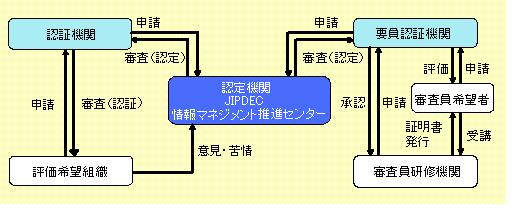
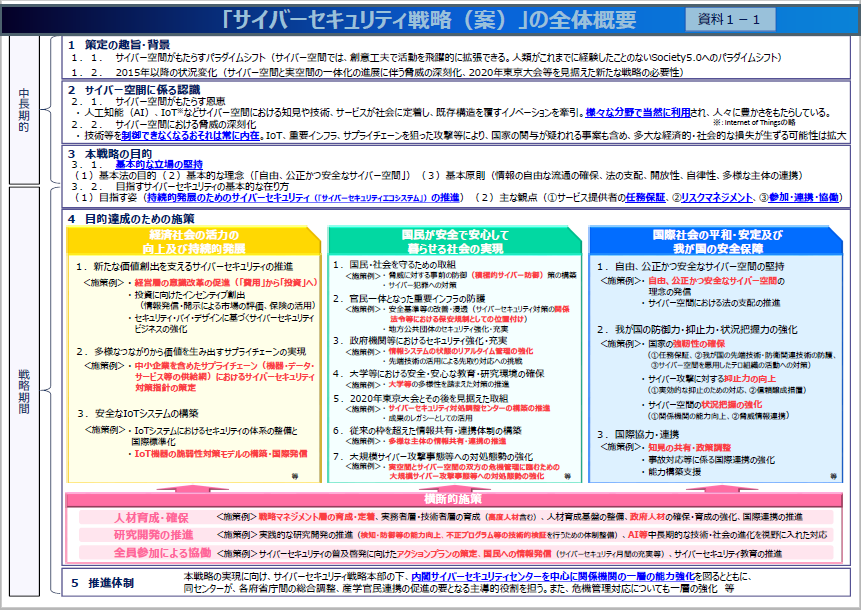

- Sec01-04サイバーセキュリティ関連各種施策等の内容要約
- 【2018年6月15日】
- 知的財産関連
- 「Bib10-08「知の共有化」に関連した国等の政策の要約」を参照
-
- 中小企業等の視点からの検討
- 現状と課題
- IoTが進む中、中小企業等においても、
- データや標準化を活用して、国境を越えて世界展開できる
- 一方、その裏返しで、突如知財の問題にさらされるリスクが高まっている
- 中小企業等を取り巻くビジネス環境が変化している状況の下
- IoT化に対応したビジネスに飛鳥な特許を国内外で取得できない恐れがある
- 第四次産業革命の下で、オープン・イノベーションが促進される中
- 自社のクローズ領域を守る手段としての知財の重要性に関する認識が十分でない
- 社会を改革するキーテクノロジーの多くが中小企業等で生み出されてきたことに鑑み
- 中小企業等の有する技術の標準化をすいしんしていくこと
- 大企業と中小企業との間で一方の有する技術を他方が活用することの重要性
- 大企業と中小企業との連携促進が不可欠
- 中小企業の分類
- IT化に対応できている企業
- ITを活用してサービスを提供する側の企業
- そのような企業から提供されるサービスを利用する企業
- IT化に対応できていない企業
- 今後実施することが適当な取り組み
- 第四次産業革命やIoT化に対応したビジネス環境の変化に対応するため
- 中小企業等が知財戦略を推進し、知財を権利化・活用することが一層求められる
- 一方、特許庁では
- 知財分野における地域・中小企業支援という観点から
- 2016年9月に「地域知財活性化行動計画」を策定
- 本計画に基づいて、中小企業等に対し
- 知財制度や支援施策の普及啓発、情報提供、各種相談・支援対応等の取り組みが実施されている
- 国内外での特許取得支援
- 相談から出願、侵害対策まで一体となった海外旋回支援
- 中小企業等が有する優れた技術については
- 新市場創造型標準化制度を利用した迅速な標準化を実現することにより、市場拡大を支援する
- 加えて、中小企業等と大企業との連携の推進への取り組みの一環として
- 「地方創生のための事業プロデューサー派遣事業」を活用し、大企業と中小企業との間での知財のマッチング等を推進
- 金融機関が有する地域の企業情報を活用した知財マッチングびじねすの促進を図る
- 中小企業等と大企業との連携に当たっては
- 企業における営業秘密に関する認識
- 双方のコンプライアンスに対する意識を向上させることが不可欠
- 知財総合支援窓口で大企業と連携する中小企業等を支援
- 中小企業等が大企業と連携する際の留意点や連携の過程で発生した懸念等についての相談受付
- 中小企業等の営業秘密が他社に渡ることを防ぐべく
- 不正競争防止法の精度や秘密情報の保護ハンドブック等の周知など営業秘密の保護。管理に関する普及啓発を進めていく
- 中小企業等と大企業との対応な連携への取り組みが推進される環境の醸成
- 次世代IT技術及び市場動向
-
- 目的等
- セキュリティ確保の観点から求められる基本的な取組を、セキュリティ・バイ・デザインを基本原則としつつ、明確化することによって、産業界による積極的な開発等の取組を促すとともに、利⽤者が安⼼してIoT機器やシステム、サービスを利⽤できる環境を生み出す
- 関係者が取り組むべきIoTのセキュリティ対策の認識を促すとともに、その認識のもと、関係者間の相互の情報共有を促すための材料を提供すること
- 守るべきものやリスクの⼤きさ等を踏まえ、役割・⽴場に応じて適切なセキュリティ対策の検討が⾏われることを期待
- 各指針と要点
- 方針
- IoTの性質を考慮した基本方針を定める
- • 経営者がIoTセキュリティにコミットする
- • 内部不正やミスに備える
- 分析
- IoTのリスクを認識する
- • 守るべきものを特定する
- • つながることによるリスクを想定する
- 設計
- 守るべきものを守る・設計を考える
- • つながる相手に迷惑をかけない設計をする
- • 不特定の相手とつなげられても安全安心を確保できる設計をする
- • 安全安心を実現する設計の評価・検証を行う
- 構築・接続
- ネットワーク上での対策を考える
- • 機能及び用途に応じて適切にネットワーク接続する
- • 初期設定に留意する
- • 認証機能を導入する
- 運用・保守
- 安全安心な状態を維持し、情報発信・共有を行う
- • 出荷・リリース後も安全安心な状態を維持する
- • 出荷・リリース後もIoTリスクを把握し、関係者に守ってもらいたいことを伝える
- • IoTシステム・サービスにおける関係者の役割を認識する
- • 脆弱な機器を把握し、適切に注意喚起を行う
- 一般利用者のためのルール
- • 問合せ窓口やサポートがない機器やサービスの購入・利用を控える
- インターネットに接続する機器やサービスの問合せ窓口やサポートがない場合、何か不都合が生じたとしても、適切に対処すること等が困難になる。問合せ窓口やサポートがない機器やサービスの購入・利用は行わないようにする。
- • 初期設定に気をつける
- ・機器を初めて使う際には、IDやパスワードの設定を適切に行う。パスワードの設定では、「機器購入時のパスワードのままとしない」、「他の人とパスワードを共有しない」、「他のパスワードを使い回さない」等に気をつける。
- ・取扱説明書等の手順に従って、自分でアップデートを実施してみる。
- • 使用しなくなった機器については電源を切る
- 使用しなくなった機器や不具合が生じた機器をインターネットに接続した状態のまま放置すると、不正利用される恐れがあることから、使用しなくなった機器は、そのまま放置せずに電源を切る。
- • 機器を手放す時はデータを消す
- 情報が他の人に漏れることのないよう、機器を捨てる、売るなど機器を手放す時は、事前に情報を削除する。
- 今後の検討
- リスク分析に基づく分野別の対策について
- IoTは、様々な分野に浸透していくことになるが、分野ごとに求められるセキュリティレベルが異なるため、多くのIoT機器が利用されている、もしくは利用が想定される分野では、具体的なIoTの利用シーンを想定し、詳細なリスク分析を行った上で、その分野の性質、特徴に応じた対策を検討する必要がある。
- 法的責任関係について
- IoTにおいては、製造メーカ、SIer、サービス提供者、利用者が複雑な関係になることが多い。よって、サイバー攻撃により被害が生じた場合の責任の在り方については、今後出現するIoTサービスの形態や、IoTが利用されている分野において規定されている法律などに応じて整理を行っていく必要がある。
- IoT時代のデータ管理の在り方について
- IoTシステムでは、利用者の個人情報等のデータを保持・管理等を行う者又は場所が、サービスの形態により変わってくる。IoTシステムの特徴を踏まえつつ、個人情報や技術情報など重要データを適切に保持・管理等を行うことが必要であり、その具体的な方法について、検討していく必要がある。
- IoTに対する総合的なセキュリティ対策について
- IoT社会の健全な発展の実現には、既に実施されている、情報処理推進機構（IPA）、情報通信研究機構（NICT）、JPCERT/CC及びTelecom ISAC Japan(ICT ISAC Japan)のサイバーセキュリティに関する取組に加え、一般利用者に対するIoT機器のマルウェア感染に関する注意喚起などの取組について、官民連携による強化を検討する。
- 本ガイドラインの見直しについて
- 上記のような検討事項の取組や、IoTを取り巻く社会的な動向、脆弱性・脅威事象の変化、対策技術の進歩等を踏まえて、今後、必要に応じて改訂を行っていく必要がある。
-
- • 任務保証の考え方に基づく取組
- 業務責任者（任務責任者）がシステム責任者（資産責任者）と、機能やサービスを全うするという観点からリスクを分析し、協議し、残存リスクの情報も添えて経営者層に対し提供し総合的な判断を受ける「機能保証（任務保証）」の考え方に基づく取組が必要
- • セキュリティ品質の実現が企業価値
- ・IoTシステムのサービスの効用と比較してセキュリティリスクを許容し得る程度まで低減
- ・高いレベルのセキュリティ品質の実現が企業価値や国際競争力の源泉に
- • セキュリティ・バイ・デザインの推進
- ・連携される既存システムを含めて、IoTシステム全体の企画・設計段階からセキュリティの確保を盛り込むセキュリティ・バイ・デザインの推進が重要。
- • データとシステム全体のセキュリティ確保
- IoTシステムはデータの流通プラットフォーム。
- データとシステム全体のセキュリティ確保を行う必要がある。
- • システム間の相互連携の際のリスク評価
- レベルの異なるIoTシステムを相互連携させる場合は、残存リスクを客観的に評価し、許容範囲内に収めるためのリスク評価が必要
- クラウドセキュリティ関連ISO規格
-
- 第1章 クラウド導入のプロセスと情報セキュリティに係る手続き
- １．１ 調達のプロセスと情報セキュリティの関係
- 第2章 情報セキュリティ手続きにおける「準備段階」の留意点
- ２．１ 教育用コンテンツに関する情報収集
- ２．２ 法令やポリシーに関する情報収集
- 第3章 情報セキュリティ手続きにおける「計画段階」の留意点
- ３．１ クラウド上で取り扱う情報資産の洗い出し
- ３．２ クラウドを中心としたICT環境に関するリスクの洗い出し
- ３．３ リスクおよび情報セキュリティポリシーを踏まえた仕様書の作成
- 第4章 情報セキュリティに関する手続きにおける「運用段階」の留意点
- ４．１ 緊急時対応計画の整備
- ４，２ 研修の実施
- ４．３ 情報セキュリティに関する監査
- ４．４ 著作権等
-
- 第5 章情報セキュリティポリシー
- 5.1 教育現場にふさわしい情報セキュリティポリシーとは
- 5.2 クラウドに対応した情報セキュリティポリシーとは
- 5.3 学校における情報セキュリティポリシーの事例
- Column 先進事例④ 教育用SNS
-
- システム化及びサイバーセキュリティ管理規約等
- 人材育成・人材確保
-
- あなたの企業に迫る脅威～ あなたの企業は大丈夫ですか？
- ＜脅威１＞ 標的型攻撃・サイバー攻撃
- 必要な対策は実施されていますか？
- ウィルス対策ソフトを社内のすべてのコンピュータに導入し、ウィルスチェックやウィルス対策ソフトの更新を頻繁に実施していますか。
- 社内のメール利用者に対して、「怪しいメールは開封しない」、「疑わしいメールのＵＲＬはクリックしない」、「不審な添付ファイルは開かない」などの基本事項についての教育が徹底されていますか。
- ウィルス対策ソフトから「ウィルスに感染した」という警告メッセージが表示された場合、まず何をすればよいか、すべての従業員が十分に理解していますか。
- 標的型攻撃を防御・検知するためのシステムの監視を行っていますか。また、そのような機能をもったセキュリティ対策ソフトを導入していますか。
- ウィルス感染や情報漏えいが発覚した場合の組織としての緊急対応手順は定められていますか。また、その手順は関係者に周知されていますか。
- あなたの企業は 大丈夫？被害を防ぐためには、こんな役割も重要です！
- システム運用において、セキュリティ障害管理 （事故の検知、初動対応、分析、復旧等）のタスクを実行する役割
- その役割を担う人材の例
- セキュリティ アドミニストレータ （インシデントハンドラ）
- 自社内のセキュリティインシデント発生直後の初動対応（被害拡大防止策の実施）や被害からの復旧業務の実施において、自らあるいは適切な対応者をアサインして対応にあたる役割。被害の拡大防止のために、適切かつ迅速な対応が求められる。
- ITサービスマネジメント（システム管理）
- 顧客の情報システムの日々の運用業務やシステム基盤の管理業務を担い、円滑な運用を実現する役割。運用時にセキュリティインシデントをモニタリングし、インシデントが発生した場合には、被害拡大防止等の初動対応を担う。
- ＜脅威２＞ 不正アクセス
- 必要な対策は実施されていますか？
- 123456, admin, password などの単語を避けることは当然ながら、意味のある単語にしない、最低８文字以上にする、定期的に変更するなど、パスワードに関する基本的なルールが社内で徹底されていますか。
- 自分の席を離れる際は、パスワードで保護されたスクリーンセーバーでパソコンを保護することをルール化していますか。
- 退職した従業員の ID など、不要な ID を放置せず、きちんと削除していますか。
- ユーザーごとにアクセス権を設定し、定期的な見直しや管理を行っていますか。
- 企業内のネットワークやコンピュータに、ファイアウォールなどの外部からの不正アクセスを検知・遮断する仕組みを導入していますか。
- 自社が提供しているサービスについて、不正アクセス対策を実施していますか。 （例：不正アクセス対策 http://www.ipa.go.jp/security/fusei/ciadr.html）
- 被害を防ぐためには、こんな役割も重要です
- システム運用において、セキュリティ管理のタスクを実行する役割
- その役割を担う人材の例
- セキュリティ アドミニストレータ （ＩＳセキュリティアドミニストレータ）
- 自社の情報セキュリティ対策の具体化や実施を統括する役割。企業全体としての情報セキュリティ戦略やポリシーを具体的な計画や手順に落とし込み、対策の立案や実施（指示・統括）、その見直しなどを行う。また、利用者に対する教育等も実施する。
- ITサービスマネジメント（運用管理）
- 顧客の情報システムの運用管理の責任者として、ITサービスマネジメントの統括責任を担う。セキュリティの面では、運用するシステムのセキュリティマネジメントに関する方針や計画を策定し、具体的な対策の実施を統括する。
- ＜脅威３＞ エクスプロイト
- 必要な対策は実施されていますか？
- 社内のコンピュータ上で利用しているソフトウェアの修正プログラム（セキュリティパッチ）が公表されたら迅速に適用していますか。セキュリティパッチが適用されずに長期間そのまま利用されているコンピュータはありませんか。
- セキュリティパッチの適用状況をきちんと把握していますか。また、それを把握し、管理する担当者は決められていますか。
- 情報システムを設計・開発する際に、セキュリティに関する仕様や基準、要求事項などを明確にしていますか。
- 開発した情報システムのテストを行う際に、外部からの攻撃などを意識したセキュリティに関するテストも実施していますか。
- 現在運用している自社のWEBシステムに脆弱性がないか、検査を行ったことはありますか。
- 被害を防ぐためには、こんな役割も重要です！
- システム開発・構築において、システム設計における セキュリティ面の検討や決定などのタスクを実行する役割
- その役割を担う人材の例
- システムテザイナー
- 自社で用いるシステムの要件定義から、システム基盤（インフラストラクチャ）の分析・設計及び構築を担う役割。ネットワークの構成やアプリケーション基盤の設計の際に、セキュリティを考慮した設計を行う。
- ITスペシャリスト（セキュリティ）
- 情報システムの設計・開発・運用において、情報セキュリティに関する高い専門性を発揮するスペシャリスト。
- セキュリティインシデントが発生した際は、高度な技術的スキルを駆使して原因の究明や復旧対応等も担う。
- ＜脅威４＞ クラウド利用におけるデータ消失・流出
- 必要な対策は実施されていますか？
- 外部のクラウドサービスを利用する際のリスク（データの消失・流出や改ざんなど）について認識していますか。
- 情報セキュリティ強化対応スキル指標のご紹介
- 自社のどのような情報がクラウドサービス上にあるか、把握していますか。
- 情報セキュリティを担う人材育成のヒント
- クラウドサービスの利用・管理に関する責任者や実務担当者を決めていますか。
- 組織において求められる情報セキュリティ対策
- クラウドサービスを提供する事業者が実施しているセキュリティ対策の具体的な内容や水準を把握していますか。
- クラウドサービスを利用する際の ID やパスワードは、適切に管理していますか。特に「なりすまし」を防ぐために、推測されにくいものになっていますか。
- クラウドサービスの停止時や障害発生時に、情報が手元で（自社内で）利用できるような対策が取られていますか。
- 被害を防ぐためには、こんな役割も重要です！
- ITシステム企画において、システム化計画の具体化 （要件定義、アーキテクチャの設計等）のタスクを実行する役割
- その役割を担う人材の例
- ＩＳアーキテクト
- 自社内の情報システム基盤の構築・維持・管理を主に担う役割。自社のIT戦略に基づき、自社システムのアーキテクチャ設計を行うほか、基盤の整備や品質統制のための取り組みなども行う。
- ITアーキテクト（セキュリティアーキテクチャ）
- 強固なセキュリティ対策が求められる情報システムのアーキテクチャの設計を担う役割。システムの企画・開発・構築・運用の各工程において、情報セキュリティ対策が十分に機能し、維持されることを担保する組織設計、ルール設計、プロセス設計もあわせて行う。
- ＜脅威５＞ スマートデバイスからの情報漏えい
- 必要な対策は実施されていますか？
- 紛失・盗難対策として、スマートフォンなどのモバイル機器の利用時に、パスワード入力しなければ使えない「パスワードロック」を設定していますか。
- ウィルス対策として、スマートフォンなどのモバイル機器のOSを、常に最新のバージョンにアップデートしていますか。
- スマートフォンのアプリは、メーカーやキャリアのアプリケーション・ストアなど、信頼できる場所からインストールしていますか。
- 業務で利用するスマートフォンなどのモバイル機器に、業務とは関係のないアプリが数多くインストールされていませんか。
- 私用のモバイル機器を業務上で利用することは、現状ではあまり推奨されませんが、利用可とする場合は、モバイル機器用のセキュリティソフトを導入するなど、適切なセキュリティ対策を利用者に義務付けていますか。
- 被害を防ぐためには、こんな役割も重要です
- 事業戦略、経営戦略の中で情報セキュリティ戦略の策定のタスクを実行する役割
- その役割を担う人材の例
- セキュリティアドミニストレータ（情報セキュリティアドミニストレータ）
- 自社の情報セキュリティ戦略やポリシーの策定等を推進する役割。戦略策定のほか、戦略実行体制の確立や開発組織の統括も担う。また、企業内のセキュリティ業務全体を俯瞰し、アウトソース等のリソース配分の判断・決定も行う。
- コンサルタント（情報リスクマネジメント）
- ビジネス機能内で情報マネジメントが適切に実現される土台としての組織体制の整備や組織内の各種ルール整備等に関する支援を担う役割。組織ガバナンスやリスクマネジメント、コンプライアンス等に関する領域において、ITソリューションを前提としたコンサルティングを行う。
- ＜脅威６＞ 内部不正・うっかりミス
- 必要な対策は実施されていますか？
- 一時的な従業員も含め、重要な情報を扱う作業は、管理監督者の目の届くところで行われていますか。単独で重要な情報にアクセスしている従業員はいませんか。
- 社員の管理・監督権限に応じて、適切なアクセス権限を設定していますか。多くの従業員が、管理者アカウントを自由に利用できるような設定になっていませんか。
- 重要な顧客情報などを保存しているコンピュータは、管理者の目の届くところに置く、別室に置いて入退室記録をつける、部屋に鍵をかけるなどの対策を行っていますか。
- 個人情報などの機密情報については、保存されているファイルにもパスワードを設定するなど、二重三重の対策を工夫していますか。
- 重要な情報が保存されているコンピュータでは、アクセスログを記録していますか。
- 重要な情報については、担当者を決めて定期的にバックアップを取っていますか。
- 被害を防ぐためには、こんな役割も重要です！
- 情報セキュリティマネジメントにおいて、セキュリティ方針の策定、 セキュリティ基準の策定のタスクを実行する役割
- その役割を担う人材の例
- セキュリティアドミニストレータ（ＩＳｾｷｭﾘﾃｨｱﾄﾞﾐﾆｽﾄﾚｰﾀ）
- 情報セキュリティ戦略やポリシーを具体的なルールや計画に落とし込み、その実行（ないしは実行の指示）のほか、維持・管理や見直しを行う役割。また、インシデント対応に備えて日頃のマネジメントや教育等の実施も担当する。
- コンサルタント（情報リスクマネジメント）
- ビジネス機能内で情報マネジメントが適切に実現される土台としての組織体制の整備や組織内の各種ルール整備等に関する支援を担う役割。組織ガバナンスやリスクマネジメント、コンプライアンス等に関する領域において、ITソリューションを前提としたコンサルティングを行う。
-
- 「iコンピテンシ・ディクショナリ」とは、ITスキル標準（ITSS）や情報システムユーザースキル標準（UISS）、組込みスキル標準（ETSS）の３つのスキル標準を包含する形で整理した、タスクとスキルのデータのことです。この iコンピテンシ・ディクショナリを参照することで、３つのスキル標準の区別を意識することなく、スキル指標としてIT関連業務に携わる人材の役割、タスクやスキルを確認することができます。
- 情報セキュリティを担う人材育成のヒント
- 情報セキュリティを担う人材の育成についての悩み
- 自社の情報セキュリティ対策
- 現場が情報セキュリティの重要性を理解してくれない。
- セキュリティに関する事故を経験したことがあるかないかによって、現場のセキュリティ意識は大きく異なる。以前事故が発生したことをきっかけに、経営者がセキュリティ対策を現場横断的な重要なテーマとして掲げ、全社的な取り組みを始めることができた
- 経営層に対して、情報セキュリティ対策の重要性を効果的に伝えられず、企業全体としての対策が進まない。
- 企業にとってのセキュリティ対策は、今や単なる事故の予防ではなく、企業のサービスの機能・品質の向上の一環であるということを、経営者に伝える必要がある。
- 経営層に対してセキュリティの重要性を伝えられる人材の有無によって、経営層の理解が変わる。これは、経営とITの関係と同じであり、“経営と現場をつなぐキーマンの育成”が鍵である。
- 情報セキュリティ担当者のスキルアップが難しい。
- ユーザー企業には、専任の情報セキュリティ担当者は少なく、担当者は数年で異動・交代することが一般的であるため、限られた期間で効果的にスキルアップする必要がある。情報セキュリティマネジメントに関する資格などの学習も効果的である。
- 情報セキュリティを担う専門人材の育成
- 専門性の高い人材の育成方法が分からない。
- 専門性は高いが、スキルの幅が広がらない。
- 専門性は高いが、ビジネスマインドが身につかない。
- 組織において求められる 情報セキュリティ対策のレベル
- 自社の属性に合った情報セキュリティ対策のレベルを見極めていく
- 情報処理安全確保支援士試験チェックシート
- 第1章 情報セキュリティ及びITの基礎
- 口情報セキュリティの主な特性として，機密性・完全性・可用性の三つがある。また，真正性，責任追跡性，否認防止及び信頼性を，情報セキュリティの付加的な特性とする場合がある。
- 口情報セキュリティ対策には，抑止・抑制，予防・防止，検知・追跡，回復などの機能がある。情報セキュリティ対策は，これらの機能のうち必ず一つ以上の機能をもっている。
- ロサイバー攻撃とは， 企業，組織，個人のコンビュータや情報システムに対し，ネットワークを介して侵入したり，不正なプログラムやコマンド，パケットを送りつけたりして，情報窃取，改ざん，破壊，サービス妨害等の攻撃や不正行為をすることである。
- 口情報資産にアクセスする人間，プロセス，プログラム等に対して，常に必要最小限の権限のみを付与するように徹底する。これをf最小権限の原則Jという。
- 口同ーの者に関連する複数の業務を行う権限を与えると，確認不足によるミスや不正行為などを発生させる原因となるため，業務ごとに担当を適切に分離する。これを「責務の分離（職務分離）の原則jという。
- 口組織内やシステムで発生する様々な事象について，それを発生させた主体（利用者，端末，プロセス，プログラム等）を一意に識別・特定し追跡・検証できるようにする。
- 口情報セキュリティマネジメントとは，「明確な方針や規定に基づいて，組織の情報資産の機密性，完全性，可用性などの特性を適切に維持・管理すること」と定義できる。
- 口問合せ元のアドレスや問合せ対象ドメインの制限なく，名前解決要求に応じるDNSサーバ（キャッシュサーバ）は「オープンリゾルバjと呼ばれる。オープンリゾルバはDNSキャッシュボイズニング攻撃に対して脆弱である。
- 口GETメソッドを使用したWebアフリケーションでは，URしから入力データが読み取られたり，改ざんされたりする可能性がある。また， Referrerログから入力データが漏えいする可能性がある。
- 口POSTメソッドを使用すれば入力データがURLに含まれないため，GETメソッドよりも秘匿性が高まるが，入力データをログに記録するにはアプリケーション側で対応する必要がある。
- 口シンクライアントを実現する主な方式として，ネットワークブート方式と画面転送方式がある。画面転送方式には，サーバベース型，プレードPC型， VDI型があり，これらの中で近年主流となっているのがユーザの利便性とコストバフォーマンスのバランスのとれたVDIである。
- 第2章 情報セキュリティにおける脅威
- ロポートスキャンとはターゲツ卜となるホスト上で開いている（通信可能な状態となっている）ポートをスキャン（探査）することである。
- 口TCPハーフスキャン（ステルススキャン）はコネクションを確立しないためターゲットホストのログには記録されない。
- 口管理者権限で実行されているサービスに対してBOF攻撃を行い，シェルなどに置き換えることに成功すれば，侵入者は管理者権限でそのホストを操作できることになる。
- 口BOF攻撃はソフトウ工アのバグが原因となっているため，その対策は， OSや使用しているソフトウェアのバージョンアップ，パッチの適用を確実に行うことで，既知のセキュリティホールを塞ぐことである。
- 口侵入者は，所有者がrootで， setuid/setgid属性をもってプログラムを実行し，非常にサイズの大きい入力データを与えることでBOF状態を引き起こし， root権限を手に入れることができる。
- 口BOF攻撃への対策として所有者がrootで＇setuid/setgid属性をもつフログラムを探し，不要なものを削除するか， setuid/setgid属性を解除する。
- 口rootkitとは，侵入に成功した攻撃者が，その後の不正な活動を行いやすくするために自身の存在を隠ぺいすることを目的として｛吏用するソフトウェアなどをまとめたパッケージの呼称（俗称）である。
- 口パスワードクラックとは， 何通りものパスワードを繰返し試してパスワードを破る行為であり，推測によるもの，辞書ファイルを用いたもの，総当たりによるもの（ブルートフォース攻撃）などがある。
- ロワンタイムパスワード方式，バイオメトリック認証システムなど，パスワードクラックが困難な認証システムにするのが確実な対策手段であり，従来の固定式パスワードを用いる場合にはアカウントのロックアウト設定が有効な対策手段となる。
- 口TCPでは，シーケンス番号の交換によって通信の信頼性を高めているが，この仕組みを悪用し，他のホストのセッションに割り込んでシーケンス番号やIPアドレスを矛盾なく操作することができればセッションハイジャックが成立する可能性がある。
- 口UDPでは，クライアントからのリクエストに対し，正規のサーバよりも先にレスポンスを返すことでセッションハイジャックが成立する可能性がある。
- 口Webアプリケーションではセッション管理の脆弱性を攻略し，URL，クッキー， hiddenフィールド、などlこセットされたセッション管理情報を推測／盗聴することによってセッションハイジヤックが成立する可能性がある。
- 口攻撃者自身のMACアドレスと正規のホストのIPアドレスとを組み合わせた偽のARP応答パケットを送信することでARPキャッシュの内容を書き換え，セッションをハイジャックする手法をARPスプーフイングもしくはARPキャッシュポイズニングという。
- 口DNSサーバがゾーン転送要求に制限をかけていないと，不正なゾーン転送要求により，サイトのネットワーク構成やサーバの構成が攻撃者に推測されてしまう可能性がある。
- 口DNSキャッシュボイス・ニンク攻撃とは，DNSサーバからの名前解決要求に対して不正な名前解決情報を付加して返すことでDNSのキャッシュを汚染し，ユーザを悪意あるサイトに誘導する攻撃である。DNSの送信元ポート番号とトランザクションIDが推測されやすいと，この攻撃による被害を受けやすい。
- 口SYNFlood攻撃とは，発信元アドレスを偽装したSYNパケットを特定のポートに大量に送りつけることで，正常なサービスの提供を妨害する行為である。
- 口コネクションレスであるUDPやICMPでは発信元アドレスの偽装が容易であるため，攻撃に悪用された場合，攻撃者を特定するのは困難である。
- 口smurf攻撃とは，ターゲヅトホストのIPアドレスに発信元アドレスを偽装したICMPecho requestを踏み台ネットワークのブロードキャストアドレスに送りつけ，その応答パケットによってDoS攻撃を成立させる手法で、ある。
- 口DDoS攻撃とはインターネット上にある多数の踏み台サイトにあらかじめ仕掛けておいた攻撃プログラムから，一斉にDos攻撃を仕掛けることで，ターゲットサイトのネットワークの帯域をあふれさせる攻撃手法である。近年， DDoS攻撃はポットネットによって実行されるケースが大半となっている。
- 口DDoS攻撃への対策として，十分な回線帯域を確保し，十分な処理能力を有する機器を使用するとともに，負荷分散，帯域制限などによって攻撃を緩和するほか，CONサービスやCONプロバイダ等が提供するDDoS攻撃対策サービスを利用することも選択肢となる。
- ロクロスサイトスクリプティング（XSS）とは，ユーザの入力データを処理するWebアプリケーションや，Web ページ．を操作するJavaScript等に存在する脆弱性を悪用し，ユーザのPC上で不正なスクリプトを実行させる攻撃手法である。
- 口xssは，その仕組みにより，反射型xss，格納型XSS,DOM Based XSSの3種類に分類される。DOMBasedxssは，スクリプ卜によるWebページ出力処理（DOM操作）に不備があることによる脆弱性である。
- ロSQLインジヱクションとは，ユーザの入力データをもとにSOL文を編集してDBにアクセスする仕組みに
- なっているWebアプリケーションに対して不正なSOL文を入力することで，機密情報を不正に取得したり，DBを不正に操作したりする攻撃手法である。
- ロOSコマンドインジェクションとはユーザの入力データをもとに，OSのコマンドを呼び出して処理する
- Webアプリケーションにおいて，不正なコマンドを入力することで，任意のファイルの読出し，変更，削除，パスワードの不正取得などを行う攻撃手法である。
- ロHTTPヘッダインジェクションとは，ユーザの入力データをもとに， HTTPメッセージのレスポンスを生成するWebアプリケーションにおいて，不正なデータを入力することで任意のヘッダフィールドやメッセージボディを追加したり複数のレスポンスに分割したりするなどの攻撃を行う手法である。
- ロメールヘッダインジェクションとはユーザがフォームに入力したデータをもとにメールを送信するWebアプリケーションにおいて，不正なメールヘッダを混入させることにより意図していないアドレスに迷惑メールを送信するなど，メール送信機能を悪用した攻撃手法である。
- 口xssやSOLインジェクションに対しては，ユーザの入力データ中にスクリプトやSQL文として特別な意味をもっメタキャラクタが存在した場合，それらをエスケープ処理することで対処する。
- 口OSコマンドインジェクションに対しては，OSコマンドの呼出しが可能な関数を極力使用しないようにすることと，使用する場合にはルールに従わないデータを無効とし，一切処理しないようにする必要がある。
- 口HTTPヘッダインジ、エクションに対しては，HTTPレスポンスヘッダ生成に用いるユーザ入力データに改行コードが含まれていた場合には削除するほか，ヘッダ出力用のAPIやライブラリを使用するなどの対策が有効である。
- ロマルウェアへの対策は各ホストにウイルス対策ソフトを導入することに加え，ファイアウオール， IPS，サンドボックス，SMTPゲートウェイ，プロキシサーバなど，通信経路上での検知・駆除対策を複合的に実施する必要がある。
- ロボット（bot）とはワームの一種で，コンビュータに感染するだけでなく攻撃者によって遠隔地から操作ができ，機能拡張なども行うよう作られた悪質なプログラムであり，その操作にはIRC,P2Pソフトなどが悪用される。
- 口ランサムウェアとは感染したコンビュータのファイルやハードディスクを勝手に暗号化する等して正常に利用できない状態にした後それを解除するための身代金の支払いを要求するタイフのマルウェアである。
- 口標的型攻撃とは特定の組織や団体等をターゲットとして，その取引先や関係者，公的機関などを煽ってマルウェアや不正なリンクが埋め込まれたメールを送信することで相手を編し，情報を盗もうとする手法である。
- 口水飲み場型攻撃とは攻撃者がターゲツトとなる組織の社員／職員等が日頃頻繁に利用しているWebサイト（水飲み場）を改ざんすることで同組織のPCをマルウェアに感染させる手口である。
- 口出口対策とは，マルウェアの侵入・感染を許したとしても，その拡散や，機密情報や個人情報の外部への流出などの被害を防ぐために行う対策である。
- 口マルウェアの検出手法としては，パターンマッチング法が代表的だが，パターンファイルに登録されていないものは検出できない。既知のウイルスの亜種や，未知のウイルスなどの検出にはヒューリスティック法やビヘイビア法が有効である。
- 第3章 情報セキュリティにおける脆弱性
- 口公開Webサーバと社内専用のファイルサーバなど，アクセスを許可する範囲（人，機器等）が明らかに異なるホストが同一セグメントに混在しているネットワークは脆弱であり，機密性，完全性の侵害につながるリスクが高い。
- 口発信元IPアドレスにプライベートアドレスが設定されたインターネットからのインバウンド、パケットなど，明らかに発信元アドレスが偽装されているパケットについては，ルータやファイアウオールによって遮断する必要がある。
- 口広く普及しているメールサーバソフトウェアの旧バージョンでは，メールの投稿にあたってユーザを認証する仕組みがなかったため発信元メールアドレスの詐称が堂々と行われるほか，組織外の第三者から別な第三者へのメール投稿を受け付け$中継してしまう。
- 口組織外の第三者から別の第三者へのメール投稿を受け付け，中継してしまうことを第三者中継（Third-PartyMail Relay）という。なお，第三者中継をオープンリレー，それを行うSMTPサーバをオープンリレー(SMTP）サーバとも呼ぶ。
- 口OP25Bとは，ISPのSMTPサーバを経由せず，直接インターネットに出ていく25番ポートあてのパケットを遮断することで，スパムメールの発信を防ぐ技術である。
- 口OP25Bが設定された環境で正当なユーザがISP以外のSMTPサーバを使用してメールを発信する場合には，投稿専用のSubmissionポート（587/TCP）を使用するとともに， SMTP-AUTHによってユーサ．認証を行う。
- 口発信元情報を偽装したメールを発見し，排除する技術として，発信元のIPアドレスやディジタル署名によってメール受信側で発信元SMTPサーバを認証する仕組み（送信ドメイン認証）が近年実用化されている。
- 口標準的なPOP3ではUSER/PASSコマンドによってユーザ認証を行うが，その際ユーザIDとパスワードは
- 平文のままネットワーク中を流れていくため，経路上でのパケット盗聴により，ユーザの認証情報が盗まれてしまう可能性が高い。
- 口POP3の脆弱性への対策としては，APOP,POP3over TLS (POP3S) SSHによるポートフォワーデイングなどがある。
- 口DNSSECは，ディジタル署名を用いて応答レコードの正当性，完全性を確認する方式であり，DNSキャッシュポイズニング攻撃への有効な対策となる。
- 口UDP53番ポートを使用するDNSの通常の名前解決では，一つのパケットに格納できるデータが512オクテットに制限されているがDNSの拡張機構であるEDNSOを用いることにより，最大65,535オクテットまで拡張することができる。
- 口DNSの脆弱性への対策として， DNSサーバを，代理名前解決を行わないコンテンツサーバと，ゾーン情報をもたない代理名前解決専用のキャッシュサーバに分離し，後者を利用可能なホストの範囲を制限する方法などがある。
- 口Webアプリケーションでは， URLパラメタ，hiddenフィールド，クッキーのいずれかの手段でセッション管理を行うが，それらのうちどれを用いていたとしても，HTTPで通信していればセッション管理情報の漏えいが発生する可能性がある。
- 口クッキーの有効期限は可能な限り短く，また有効範囲は可能な限り狭くすることに加え， HTTPS(TLS）を使用しているページでは必ず、secure属性を設定し，盗聴によってクッキーが盗まれるのを防ぐ必要がある。
- 口HttpOnly属性をクッキーに設定することにより，適用範囲をHTIP/HTIPS通信だけに限定し，xssによってクッキーが盗まれるのを防ぐことが可能となる。
- 口重要なセッション管理情報はすべてWebサーバ側で管理し， URLパラメタ，クッキー， hiddenフィールドには，セッションの識別情報（ID）しか含めないようにする。
- ロセッションIDには十分な長さをもった乱数やハッシュ値を用いる（GETメソッドを使用している場合は特に重要）。
- 口HTTPのベーシック認証では盗聴によって認証情報が漏えいする可能性があるため，使用する場合にはHTTPSによって暗号化する。
- 口Webサーバが詳細なエラーメッセージをクライアントに返す設定になっていると機密情報の漏えいにつながる可能性があるため，必要最小限のエラーメッセージのみを返すように設定する。
- 口CSRFとは， Webアプリケーションのユーザ認証やセッション管理の不備を突いて，サイトの利用者に，Web アプリケーションに対する不正な処理要求を行わせる手法である。
- 第4章 情報セキュリティマネジメントの実践
- 口情報セキュリティ対策の効果を高めるためには，リスク分析によって組織に内在する様々な情報リスクを洗い出すとともに，その影響度を分析・評価し，有効な対策を導き出す必要がある。この一連の取組みをリスクアセスメントという。
- 口詳細リスク分析では，分析の対象となる組織や情報システムにおける情報資産，脅威，脆弱性を洗い出し，それらの関連性からリスクを洗い出し，その大きさを評価する。
- ロリスクコントロールとは，潜在的なリスクに対して，物理的対策，技術的対策，運用管理的対策によって，発生を抑止したり，損失を低減させたりすることである。
- 口リスクファイナンシングとは， リスクが顕在化して損失が発生した場合に備えて，損失の補壌や対応費用などの確保をしておくことである。
- 口組織の重要な情報資産を適切に保護するためには，その重要度などに応じて整理・分類するとともに，取扱い方法を明確にする必要がある。
- 口特定組織におけるCSIRTには，インシデン卜発生時にその対応を主導し，情報を集約して顧客，株主，経営者，監督官庁等に適時報告するとともに，現場組織等に適時対応を指示することなどが求められる。 また，平常時の活動として，セキュリティ情報の収集，業界団体，他のCSIRT等と連携し，インシデント発生に備えた対応を行うことなども重要な役割となる。
- 口BCMを確立するには，まずビジネスインパクト分析(BIA）を行い，重要業務の停止時に目標時間内に復旧させるための具体的な計画や手順を事業継続計画(BCP）として策定する必要がある。
- 第5章 情報セキュリティ対策技術
- (1)侵入検知・防御
- ロホスト要塞化の主な実施項目としては，最適なパーティション設計とセキュアなファイルシステムの選択，最新バージョンのソフトウェアのインストールとパッチ適用，不要なサービスや機能の停止，アカウントの停止／削除とパスワードの強化，システムリソースに対する最小限のアクセス権の設定適切なロギング設定，などがある。
- 口OS，サーバソフトウェアに対する脆弱性検査で、は，発見された脆弱性に直ちに対処するとともに，同じ製品構成の他のホストにも同様の脆弱性が存在する可能性が高いため，それを確認し，対処する必要がある。
- 口Webアプリケーションに対する脆弱性検査では，発見された脆弱性に直ちに対処するとともに，そのページを開発したベンダが開発した他のアプリケーションにも同様な脆弱性が存在する可能性が高いため，それを確認し，対処する必要がある。
- ロパケットフィルタ型（スタティックパケットフィルタ型）ファイアウオールとは，パケットのヘッダ情報に含まれるIPアドレスポート番号などによって中継の可否を判断するもので，パケットのアプリケーション層のデータ（ぺイロード）についてはチェックしない。
- ロダイナミックパケットフィルタ型ファイアウオールとは，最初にコネクションを確立する方向のみを意識した基本的なACしを事前に登録しておき，実際に接続要求があると，個々の通信を管理テーブルに登録するとともに必要なルールが動的に作成され，フィルタリング処理を行う方式である。
- 口ファイアウオールでは，許可されたプロトコルに対するポートスキャンや，BOF攻撃などOSやミドルウェアの脆弱性を突いた攻撃， SOLインジエクションなどWebアプリケーションの脆弱性を突いた攻撃，DoS系の攻撃などを防ぐことはできない。
- 口一般的なNIDSは主に登録されたシグネチャ（攻撃パターンのデータベース）とのマッチング，異常検知（アノマリ検知）というこつの手法を用いて攻撃や不正アクセスを検知する。
- ロアノマリ検知とは取り込んだパケットをRFCのプロトコル仕様など（正常なパターン）と比較し，仕様から逸脱したものを異常として検知する手法である。
- 口HIDSは監視対象となるホストに常駐し，ログインの成功／失敗，特権ユーザへの昇格，システム管理者用プログラムの起動，特定のファイルへのアクセス，プログラムのインストールなどのイベントをリアルタイムに監視する。
- ロIDSの誤検知の割合を測るための指標として，フォールスポジティブとフォールスネガティブの二つがある。前者は不正ではない事象を不正行為として検知してしまうことを指し，後者は本来検知すべき不正行為を見逃してしまうことを指す。
- ロNIDSには誤検知のほか，一部の高性能な機種を除き暗号化されたパケットを検知できない，サイト独自のアプリケーションの脆弱性を突いた攻撃を検知できない，不正アクセスを防御できない，内部犯罪の検知は困難，などの機能上の限界や運用上の課題がある。
- 口侵入防御システム（IPS）とは，従来のNIDSをインライン接続することで＇ ，NI DSと同等の侵入検知機能と，NIDSよりも強力な防御機能を備えた製品である。誤検知が発生しやすかったアノマリ検知機能の強化などが図られている。
- ロIPSをインライン接続することによってパケットを遮断する場合，フォールスポジティブが発生すれば正常なアクセスが遮断されてしまう。逆に，フォールスネガティブが発生すれば攻撃を見逃してしまう。また，誤検知ではなくとも攻撃が多発すればIPSの処理能力等の問題でネットワークのパフォーマンスやアベイラビリティを低下させてしまう可能性がある。
- ロ一般的なIPSでは，フェールオープン機能を用いることで，障害が発生した場合にはパケットをそのまま通過させ， トラフィックが遮断されないようにすることも可能である。
- 口Webアプリケーションファイアウオール（WAF）とは， XSS, SQLインジェクションなど， Webアプリケーションに対する攻撃を検知・排除する製品である。
- 口一般的なWAFにはSSL暗号化／復号機能や負荷分散機能が内蔵されている。そのため， SSLアクセラレータ，ロードバランサを併用することなくWebサイトを運用することも可能である。
- 口リバースプロキシ型のWAFを経由したリクエストは，発信元の情報がWAFに置き換えられるため， Webサーバのアクセスロク上では実際の発信者を特定できなくなる。そのため， WAFによっては実際の発信者のアドレスを引き継いで渡す機能もある。
- 口近年普及しつつあるサンドボックスとは，実環境から隔離されたセキュアな仮想環境のことであり，当該環境でマルウェアの可能性がある不審なファイル等を実行させ，その振る舞いを観察することでマルウェアであるかどうかを判定する。
- (2)アクセス制御と認証
- 口ファイルやシステム資源などの所有者が，読取り，書込み，実行などのアクセス権を設定する方式を任意アクセス制御（DAC）という。DACでは所有者の裁量次第でファイルなどへのアクセス権が決定するため，十分な機密保護を行うのは困難である。
- 口保護する対象である情報と，それを操作するユーザなどに対してそれぞれセキュリティのレベルを付し，それを比較することによって強制的にアクセス制限を行う方式を強制アクセス制御（MAC）という。MACでは，たとえファイルの所有者であったとしても，アクセス権を自由に決定することはできない。
- 口認証の対象として，人の認証（本人認証），物（機器，デバイス等）の認証情報の認証（メッセージ認証）の三つがある。また，本人認証として，バイオメトリクスによる認証，所有物による認証，記憶や秘密による認証の三つがある。
- 口認証された利用者に対して，定められた機能などを実行するための権限を与えることを「認可(Authorization)J という。
- 口チャレンジレスポンス方式とはサーバから送られた乱数文字列である「チャレンジ」と，クライアントのパスワードである「シード」(Seed ：種）を組み合わせて計算した結果を「レスポンス」としてサーバに返し，サーバも同様の計算を行って求めたレスポンスとの比較によってユーザ‘を認証する方式である。
- 口ワンタイムパスワード方式は，認証のたびに毎回異なるパスワードを使用することでセキュリティを確保するが，そのためには生成するパスワードに規則性や連続性がなく（ランダムであることにユーザがパスワードを覚えなくてもよいようになっている必要がある。
- 口チャレンジレスポンス方式やS/Keyによる認証における問題として，サーバの正当性を確認する仕組みがないと通信経路上に不正なホストが存在し，それによってセッションをハイジヤックされてしまう可能性がある。これを中間者攻撃（Man-in-the-MiddleAttack）と呼ぶ。
- 口認証システムに対する中間者攻撃の脅威に対しては，SSL/TLSのように通信に先立ちディジタル証明書によってクライアントがサーバの正当性を確認する方式を採用することなどが対抗策となる。
- 口ICカードに対する攻撃手法は， ICチップの破壊を伴うもの（破壊攻撃）と伴わないもの（非破壊攻撃，もしくはサイドチャネル攻撃）に大別される。前者の代表的なものとして，プロービングやリバースエンジニアリングがあり，後者の代表的なものとしては， DPA,SPA，グリッチ，光照射などがある。
- 口ICチップの脆弱性評価に関する事実上の基準となっているのはJIWGである。JIWGはICカードの評価の公平性や客観性を実現するための解釈の統ーや， ISO/IEC 15408をICカードの評価に適用する際の解釈の統一を目的としたワーキンググループである。
- 口IEEE802.1Xは，ネットワーク環境でユーザ認証を行うための規格である。もともとは有線LAN向けの仕様として策定が進められたがその後EAPとして実装され，現在では無線LAN環境における認証システムの標準仕様として広く利用されている。
- 口IEEE802.1Xは，クライアントであるサプリカント(Supplicant）システム，アクセスポイン卜やLANスイッチなど，認証の窓口となる機器である認証装置(Authenticator），認証サーバ（RADIUSサーバなど）から構成される。
- 口EAP-TLSは，サーバ・サフリカントでTLSによる相互認証を行う方式であり認証成立後にはTLSのマスタシークレットをもとにユーザごとに異なる暗号鍵を生成・配付し，定期的に変更するため，無線LANのセキュリティを高めることができる。
- 口EAP-TTLSは，TLSによるサーバ認証によってEAPトンネルを確立後，そのトンネル内で様々な方式を用いてサプリカントを認証する方式であり， EAP-TLSと閉じ仕組みにより，無線LANのセキュリティを高めることができる。
- 口PEAPは，EAP-TTLSとほぼ問機の方式だが，サプリカントの認証はEAP準拠の方式に限られる。EAPTLS,EAP-TTLSと同じ仕組みにより，無線LANのセキュリティを高めることができる。
- 口EAP-MD5は， M05によるチャレンジレスポンス方式によってパスワードを暗号化しサプリカントの認証のみを行う方式である。認証フロセスそのものは暗号化されず，暗号鍵の生成・配付等も行わないため，無線LANでの使用には向かない（有線LAN向き）。
- 口シングルサインオン（SSO）を実現するには，各サーバ間でユーザの識別情報を交換する必要があるが，それを行うための仕組みとして，クッキーを用いる方式，リバースプロキシサーバを用いる方式， SAMLを用いる方式があるo
- ロクッキーを用いたsso認証システムでは，クッキーが共有可能な範囲内（同一ドメイン内）でしか使用できない，クライアントがクッキーの使用を制限している場合には使用できない等の問題がある。一方，リパースプロキシ方式については，ネットワーク構成の制約により，複数のドメインにまたがったシステムでssoを実現するのは困難である。
- 口SAMLとは，認証情報を安全に交換するためのXML仕様であり，OASISによって策定された。SAMLはSOAPをベースとしており同一ドメイン内や特定のベンダ製品にとどまらない大規模なサイトなどにおいて，相互運用性の高いssoの仕組みゃ，セキュアな認証情報管理を実現する技術である。
- 口SAMLでは，認証結果の伝達，属性情報の伝達，アクセス制御情報の伝達，のそれぞれにアサーションと呼ばれるセキュリティ情報を扱うほかアサーションへのリファレンス情報などからなる「Artifact」と呼ばれる情報が使用されている。
- 口SAMLでは，ldPとSP闘で要求・応答メッセージを送受信するためにHTTPやSOAP等のプロトコルにマッピングする方法（バインディング方法） として，SOAP, HTTP Redirect, HTTP POST, HTTPArtifactなどの穫類がある。
- 口一般的に，アイデンティティ管理（ID管理）は，ディレクトリ，プロビジョニング，アクセス制御（管理），ワークフローなどのシステムとそれを運用管理するためのポリシ，手順，体制などによって実現される。
- (3)暗号
- 口AESとは，DESの後継となる米国政府標準の共通鍵暗号方式である。NISTによる審査の結果，ベルギーのJoanDaemen氏とVincentRijmen氏が開発したfRjjndaelJ （レインダール）という方式が選ばれた。ブロック長は128ビットで＼ 使用する鍵の長さは128/192/256ビ、ツトの中から選択できる。
- 口ブロック暗号では，処理を複雑にし，暗号の強度を高める暗号化手法（暗号モード）が確立されており，CBC(Ci pher Block Chaining）やCFB(Cipher Feedback)などがある。CBCは一つ前の平文ブロックの暗号結果と次の平文ブロックをXOR演算し，その結果を暗号化する方式であり，広く使用されている。
- 口ハッシュ関数とは，任意の長さの入力データをもとに，固定長のビット列（ハッシュ値メッセージダイジ、エスト）を出力する関数であり，衝突発見困難性，第2原像計算困難性，原像計算困難性（一方向性）の三つの性質が求められる。
- 口SHA-1には，ある条件下でハッシュ値の衝突を意図的に起こすことができるという脆弱性が発見されていることから，次世代ハッシュ関数（SHA-3）が決定されるまでの措置として， SHA-2に移行することが推奨されていたが，NIST主催の次世代暗号コンペティションの結果，2012年10月にfKeccakJ がSHA-3に選出された。
- 口MAC（メッセージ認証コード）とは通信データの改ざん有無を検知し完全性を保証するために通信データから生成する固定長のコード（ビット列）である。MACには，ブロック暗号を用いたCMAC，ハッシュ関数を用いたもの（HMAC）などがある。
- 口HMACは，ハッシュ値の計算時に，通信を行う両者が共有している秘密鍵の値を加えてその通信固有のハッシュ値を求めるようにすることで通信データの改ざんを検知する仕組みである。
- ロフィンガプリントとは，ディジタル証明書や公開鍵，メールなどの電子データが改ざんされていないことを証明するために使用するデータであり，ハッシュ関数を用いて対象となる電子データから生成する。
- ロPC環境において暗号化に用いる鍵を安全に生成して格納したり，暗号化・復号処理等を実行したりするための技術として， 近年TPM(Trusted PlatformModule）が広く用いられている。TPMは耐タンパ性に優れたセキュリティチッフであり，通常PCのマザーボードに直付けする形で搭載されている。
- 口Diffie-Hellman鍵交換アルゴリズムは，離散対数問題が困難であることを安全性の根拠にしており，安全でない通信路を使って暗号化に用いる秘密対称鍵を生成し，共有することを可能にするものである。
- ロSAとは，IPsecにおける論理的なコネクション（トンネル）であり，制御用に用いるISAKMPSAと，実際の通信データを送るために用いるIPsecSAがある。IPsec通信を始める際には最初に制御用のISAK MPSAが作られ，次にIPsecSAが作られる。
- 口ISAKMPSAはIPsecゲートウ工イ聞で一つ（上り下り兼用）作られるが， IPsecSAは，各ホスト問において，通信の方向や使用するプロトコル（AH, ESP）ごとに別々のSAが作られる。IPsecSAの識別情報として，あて先IPアドレス，フロトコル，SPIが使用される。
- 口AH（認証ヘッダ）は，主に通信データの認証（メツセージ認証）のために使用されるプロトコルであり，通信データを暗号化する機能はない。
- ロESP（暗号化ぺイロード） は通信データの認証（メッセージ、認証）と，暗号化の両方の機能を提供するプロトコルである。
- 口AHではMACを用いてパケット全体のICVを作成するため，完全性チェックの精度を高めることが可能だが，その反面， NATを使用している場合には経路上でIPアドレスが変更されてしまうため完全性チェックが正常に行えなくなってしまうという問題がある。
- 口ESPもAHと同様にMACを用いてICVを生成するが，AHとは異なり，IPアドレスについては計算の対象としていないため，NATを行ってもICVは影響を受けずに済む。ただし， NAPTについては正常に行えないため，対処が必要となる。
- ロIKEバージョン1(IKEv1）は， SAや鍵管理の仕様を規定したISAKMP/Oakleyを実装した汎用的なプロトコルであり，500/UDPを使用する。IKEv1の鍵交換方式として，ISAKMPSAの作成に使用するメインモード＼ アグレッシブモード， IPsecSAの作成に使用するクイックモードなどが、ある。
- 口IKEでは，通信に先立って通信相手を認証する。その方式としては，通信を行う者同士が，あらかじめ鍵を共有しておき，それによって相手を認証する［事前共有鍵認証jのほか，「ディジタル署名認証jや「公開鍵暗号認証jなどがある。
- 口メインモードで事前共有鍵認証を行う場合，通信相手を識別するIDは暗号化されるが，IDにはIPアドレスしか使用できないという制約がある。そのため，モバイル接続のように，毎回動的にIPアドレスが、設定される環境では使用できない。
- 口アグレッシブモードで事前共有鍵認証を行う場合，IDは暗号化されないが，最初に送信されるため，IDにFQDNなどを使用して事前共有鍵との対応付けを行うことができる。そのためIPアドレスが動的に設定される環境でも使用することができる。
- ロクイックモードでは前フェース‘で確立したISAKMPSAを使用して通信が行われるためパケットのぺイロード部分が暗号化される。
- 口リモートアクセス環境でのIPsec通信では，SAの作成時に端末機器を認証（デバイス認証）するだけでなく，端末の使用者も認証（ユーザ認証）する必要がある。IPsecでは，これを行う手段として， XAUTHが広く利用されている。
- 口NAPTを使用する環境では，AH,ESPともにそのままではIPsecを使用することができないため， IPsecのパケットに新たなUDPヘッダを追加（カプセル化）することによって対応する方法が広く用いられている。
- 口SSL/TLSは， トランスポート層とアプリケーション層の間に位置付けられ，その内部は下位層のRecordプロトコルと，上位層の四つのプロトコル（HandshakeプロトコJレ，ChangeCipher Specプロトコル，Alertプロトコル，ApplicationDataプ口トコル）から構成される。
- 口Recordプロトコルは，上位層からのデータを214バイト以下のブロックに分割し，圧縮，MACの生成，暗号化の処理を行って送信する。データ受信時には，復号，MACの検証，伸張の処理を行って上位層に引き渡す。
- 口Handshakeフ口トコルはサーバ・クライアント間で新たにセッションを確立する，もしくは既存のセッションを再開する際に，暗号化アルゴリズム，鍵，ディジタル証明書など，通信に必要なパラメタを相手とネゴシエーションして決定する。
- 口SSL/TLSにおける「セッションjとは， Handshakeプ口トコルによるサーバとクライアントの鍵交換（ネゴシエーション）の結果生成された，マスタシークレツトによって特定される仮想的な概念である。一方「コネクションJは，セッションに従属して存在する通信チャネルであり，一つのセッションには，必要に応じて複数のコネクションが存在する。
- 口HSTSは， Webサイトが， HTTPSでアクセスしたブラウザに対し，当該ドメイン（サフドメインにも適用可能）への次回以降のアクセスにおいて，”max-age”で指定した有効期限（秒単位）まで， HTTPSの使用を強制させる機構である。
- 口S/MIMEは不特定多数のユーザ問で安全性，信頼性の高い通信を行うことを想定しているため，利用にあたって各ユーザは公的な第三者機関が発行するディジタル証明書（S/MIME証明書）を取得することが前提となる。
- 口X.509は，ITU-Tが1988年に勧告したディジタル証明書及びCALの標準仕様でありISO/IEC 9594-8として国際規格化されている。X.509では，ディジタル証明書の発行者が拡張フィールドに独自の情報を追加できるようになったほか， 2000年にはX.509v3の改訂が行われ，新たにAC（属性証明書），ACAL （属性証明書失効リスト）が定義された。
- 口OCSPレスポンダとは，ディジタル証明書の失効有無をリアルタイムで応答するサーバであり，CAやVAが運営する。クライアン卜はOCSPレスポンダに問い合わせることによって自力でCRしを取得したり照合したりする手間を省くことができる。
- 口SCVPはOCSPと同様に証明書の有効性検証をリアルタイムで行う仕組みであるがOCSPではディジタル証明書の失効情報のみをチェックするのに対し，SCVPでは信頼関係（有効期限，署名など）も含めてチェックする。
- ロタイムスタンプとは，電子文書に対して，信頼される第三者機関である時刻認証局（TSA）が付す時刻情報を含んだ電子データでありその電子文書が「いつ」作成されたかということと「その時刻以降改ざんされていなしリことを保証するものである。
- 口過去のある時点でディジタル署名が有効であったことを検証するために，当該署名に対する公開鍵証明書，当該証明書からルート証明書に至るまでのパス上のすべての公開鍵証明書， 及びそれらに関する失効情報等をすべて集め，それらに対するタイムスタンプを付したものをアーカイブタイムスタンプという。
- 口アーカイブタイムスタンプは関連する技術の危殆化によって有効性が失われてしまう前に，その時点の最新技術を用いて次のアーカイブタイムスタンプを取得する必要がある。これは，電子文書を保存している限り，必要に応じて繰返し行っていく必要がある。
- 第8章 システム開発におけるセキュリティ対策
- ロシステム要件や利用環境等に応じた適切なセキュリティ機構を有し，脆弱性への対処がなされたセキュアなアプリケーションを開発するためには，開発工程の初期段階からセキュリティ対策に取り組む必要がある。
- 口CIC＋＋ 言語のgets,strcpy, strcat, sprintf, scant,sscanf, fscanfなどの関数では，入力データをサイズの制限なくメモリ内の変数領域に格納してしまうため，バッファオーバフロー（BOF）状態を引き起こす可能性が高い。
- 口上記の関数への対策としては，バッファに書き込むサイズを指定できる関数（fgets, strncpy, strncat,snprintf等）で代用するか，精度を指定してバッファに書き込む最大サイズを制限することである。
- 口CIC＋＋言語をはじめ，多くのプログラム言語で，ナル文字は文字列の終端を示すものとなるため，文字列を処理する関数はナル文字を見付けると読込みなどの処理を終了する，バッファに文字列を格納する関数は，末尾にナル文字を付加する，などの処理を行う場合が多い。
- 口末尾にナル文字を付加する関数を使用する際には，文字列を格納する先のバッファのサイズとして，格納する対象となる文字列の長さに加えナル文字分（1バイト）が必要である。これを怠るとBOFの問題が発生する可能性が高まる。
- 口Javaで採用されているサンドボックスモデルとは，ネットワークなどを通じて外部から受け取ったプログラムを，セキュリティが確保された領域で動作させることによって，プログラムが不正な操作や動作をするのを防ぐ仕組みである。
- 口レースコンディション（競合状態）とは，並列して動作する複数のプロセスやスレッドが，同一のリソース（ファイル，メモリ，デバイス等）ヘほぼ同時にアクセスしたことによって競合状態が．引き起こされ，その結果，予定外の処理結果が生じるという問題である。
- 口ECMAScriptにおいて，外部からの入力値を文字列リテラルとして扱う場合にはメタキャラクタをエスケープ処理する必要がある。エスケープ処理が必要な文字として最低限次の四つが挙げられる。「＼ → ＼＼」「’→ ＼’」「”→ ＼”」「改行→ ＼n」。
- 口ECMAScriptにおいて，グローバル変数は関数の外で「var」を用いて定義し ローカル変数は使用する関数の中で「var」を用いて定義する。「var」を使用せずに定義した変数はすべてグローバル変数として解釈されるが，発見が困難なバクを作り出す大きな要因となるため，避けなければならない。
- 口Ajax(Asynchronous JavaScript + XML） とは，JavaScriptなどのスクリプト言語を使ってサーバと非同期通信を行うことで、Webページ全体を再描画することなく，ページの必要な箇所だけを部分的に更新することを可能にする技術である。
- 口XMLHttpRequestは各種ブラウザに実装されている組込みオブジエクト（API）であり，周期通信，非同期通信の双方をサポートしている。
- 口JSON(JavaScript Object Notation）とは，ECMA-262標準第3版準拠のJavaScript(ECMAScript）をもとにした軽量のデータ記述方式である。
- 口JSONP (JSON with Padding）とは，くscript＞タグのsrc属性にはクロスドメイン通信の制限がなく，別ドメインのURしを指定できることを利用することで，JavaScript (ECMAScript）とJSONを用いてクロスドメイン通信を実現する技術である。
- 第9章 情報セキュリティに関する法制度
- 口ISO/IEC 15408は，オペレーテイングシステム，アプリケーションプログラム，通信機器，情報家電など，セキュリティ機能を備えたすべてのIT関連製品や，それらを組み合わせた一連の情報システムのセキュリティレベルを評価するための国際規格である。
- 口CMMI（能力成熟度モデル統合版）は，米国国防総省が米国カーネギーメロン大学に設置したソフトウェア工学研究所で考案された能力成熟度モデルの一つであり，システム開発を行う組織がプロセス改善を行うためのガイドラインとなるものである。
- ロPCIDSS (Payment Card Industry Data SecurityStandard）とは，クレジットカード情報や取引情報の保護を目的として国際ぺイメントブランド5社が共同で策定したセキュリティ基準であり，対策を実施する頻度や許容期間などが具体的に示されているのが大きな特徴となっている。
- 口ISO/IEC 20000とはIT関連サービスを提供する組織が，顧客の求める品質を確保し，維持・改善するための要求事項を規定した国際規格であり， ITサービスマネジメントにおける業務プロセスや管理手法を体系的に整理した書籍群であるITILに基づいている。
- ロ行政手続における特定の個人を識別するための番号の利用等に関する法律（マイナンバー法）は，年金や納税等，異なる分野の個人情報を照合できるようにするとともに，行政の効率化や公正な給付と負担を実現し，手続の簡素化による国民の負担軽減を図ることなどを主な目的としている。
- ロサイバーセキュリティ基本法は，サイバーセキュリティに関する施策や戦略を明確に定め，総合的かつ効果的に推進することにより，経済社会の活力向上，持続的発展，国民が安全で安心して暮らせる社会の実現，国際社会の平和及び安全の確保，国の安全保障への寄与などを目的にしている。
- ロ知的財産権のうち，特許権，実用新案権，意匠権，商標権の四つを［産業財産権Jという。
- ロ産業財産権の存続期間は，特許権が出願日から20年，実用新案権が出願白から10年，意匠権が登録日から最長20年，商標権が登録日から10年（継続使用による更新可能）となっている。
- ロ著作権とは，創作された表現を保護する権利であり，著作物を創作した時点で成立し，著作者の死後， 50年を経過するまでの間，存続する。ただし，映画の著作物の保護期間は公表後70年となっているo
- ロ不正競争防止法が保護の対象としているのは「秘密として管理されている有用な技術上又は営業上の情報であって，公然と知られていないもの」である。
- 口内部統制とは，企業において業務が正常かつ有効に行われるよう各種の手続や仕組み，プロセスを整備し，それを遂行することによって，企業の活動全般を適切にコントロールすることをいう。
- 口COBIT(COBITS）は，ITガバナンス及びITマネジメントに関する実践規範であり，ガイドライン文書， フレームワーク，プロセス参照モデル等からなる。
- ISMS関連
- ■ISMSユーザーズガイド-JISQ27001:2014(ISO/IEC27001:2013)対応【JIPDEC】
- ■ISMSユーザーズガイド-JISQ27001:2014(ISO/IEC27001:2013)対応-リスクマネジメント編【JIPDEC】
- 情報セキュリティマネジメントシステム(ISMS)
適合性評価制度- ISMS適合性評価制度とは
- JIS Q 27001:2014もしくはISO/IEC 27001:2013を認証基準とした情報セキュリティの運用管理に対する第三者評価制度である
- 認証審査
- 評価機関により、JIS Q 27001:2014もしくはISO/IEC 27001:2013に基づいて認証審査が行われる
- JIPDEC
- 適合性評価制度に基づく適合性評価機関（認証機関）を認定する
- 適合性評価機関の認定、不認定、保留、取消し又は一時停止等を審議する。
- 情報セキュリティ関連の調達時に提示する要件（例）
 情報セキュリティマネジメントシステム(ISMS)適合性評価制度の認証機関により、ISMS認証を取得した機関（企業、部署）
情報セキュリティマネジメントシステム(ISMS)適合性評価制度の認証機関により、ISMS認証を取得した機関（企業、部署）- 補足：外部委託作業時及び内容に関してのセキュリティ要件ではないが、作業時に情報セキュリティに対するルールを順守する意識が高いと想定される
- 参考資料
- 情報セキュリティマネジメントシステム(ISMS)適合性評価制度の概要
- ISMS適合性評価制度の運用
- ISMS適合性評価制度は、組織が構築したISMSがJIS Q 27001（ISO/IEC 27001）に適合しているか審査し登録する「認証機関」、審査員の資格を付与する「要員認証機関」、及びこれら各機関がその業務を行う能力を備えているかをみる「認定機関」からなる総合的な仕組みである。なお、審査員になるために必要な研修を実施する「審査員研修機関」は要員認証機関が承認する。
- 
- ISMS認証機関一覧
- ISMS認証取得組織検索
- 情報セキュリティマネジメント（ISMS）に準拠した対策【ISO/IEC27001:2013（管理項目35, 管理策114）】
- 管理的対策
- A5.情報セキュリティのための方針群
- 情報セキユリティのための経営陣の方向性
- 情報セキュリティのための方針群
- 情報セキュリティのための方針群は， これを定義し， 管理層が承認し， 発行し， 従業員及び関連する外部関係者に通知しなければならない
- 情報セキュリティのための方針群のレビュー
- 情報セキュリティのための方針群は， あらかじめ定めた間隔で， 又は重大な変化が発生した場合に， それが引き続き適切， 妥当かつ有効であることを確実にするためにレビューしなければならない。
- A6.情報セキュリティのための組織
- 内部組織
- 情報セキュリティの役割及び責任
- 全ての情報セキュリティの責任を定め， 割り当てなければならない
- 職務の分離
- 相反する職務及び責任範囲は組織の資産に対する， 認可されていない若しくは意図しない変更又は不正使用の危険性を低減するために， 分離しなければならない。
- 関係当局との連絡
- 関係当局との適切な連絡体制を維持しなければならない。
- 専門組織との連絡
- 情報セキュリティに関する研究会又は会議、及び情報セキュリティの専門家による協会・団体との適切な連絡体制を維持しなければならない。
- プロジェクトマネジメントにおける情報セキュリティ
- プロジェクトの種類にかかわらず， プロジェクトマネジメントにおいては， 情報セキュリティに取り組まなければならない。
- モバイル機器及びテレワーキング
- モバイル機器の方針
- モバイル機器を用いることによって生じるリスクを管理するために、方針及びその方針を支援するセキュリティ対策を採用しなければならない
- テレワーキング
- テレワーキングの場所でアクセス， 処理及び保存される情報を保護するために方針及びその方針を支援するセキュリティ対策を実施しなければならない。
- A8.資産の管理
- 資産に対する責任
- 資産目録
- 情報，情報に関連するその他の資産及び情報処理施設を特定しなければならない。また，これらの資産の目録を，作成し，維持しなければならない。
- 資産の管理責任
- 目録の中で維持される資産は，管理されなければならない。
- 注6.1.2及び6.1.3では，情報セキュリティのリスクを運用管理することについて責任及び権限をもつ人又は主体をリスク所有者としている。情報セキュリティにおいて，多くの場合，資産の管理責任を負う者はリスク所有者でもある。
- 資産利用の許容範囲
- 情報の利用の許容範囲，並びに情報及び情報処理施設と関連する資産の利用の許容範囲に関する規則は，明確にし，文書化し，実施しなければならない。
- 資産の返却
- 全ての従業員及び外部の利用者は，雇用，契約又は合意の終了時に，自らが所持する組織の資産の全てを返却しなければならない。
- 情報分類
- 情報の分類
- 情報は，法的要求事項，価値，重要性，及び認可されていない開示又は変更に対して取扱いに慎重を要する度合いの観点から，分類しなければならない。
- 情報のラベル付け
- 情報のラベル付けに関する適切な一連の手順は，組織が採用した情報分類体系に従って策定し，実施しなければならない。
- 資産の取り扱い
- 資産の取扱いに関する手順は，組織が採用した情報分類体系に従って策定し，実施しなければならない
- 媒体の取扱い
- 取外し可能な媒体の管理
- 組織が採用した分類体系に従って、取外し可能な媒体の管理のための手順を実施しなければならない
- 媒体の処分
- 媒体が不要になった場合は、正式な手順を用いて、セキュリティを保って処分しなければならない
- 物理的媒体の輸送
- 情報を格納した媒体は，輸送の途中における，認可されていないアクセス、不正使用又は破損から保護しなければならない。
- A12.運用のセキュリティ
- 運用の手順及び責任
- 操作手順
- 変更管理
- 容量・能力の管理
- 開発環境、試験環境及び運用環境の分離
- マルウェアからの保護
- マルウェアに対する管理策
- バックアップ
- 情報のバックアップ
- ログ取得及び監視
- イベントログ取得
- ログ情報の保護
- 実務管理者及び運用担当者の作業ログ
- クロックの同期
- 運用ソフトウエアの管理
- 運用システムに関わるソフトウェアの導入
- 技術的ぜい弱性管理
- 技術的脆弱性の管理
- ソフトウェアのインストールの制限
- 情報システムの監査に対する考慮事項
- 情報システムの監査に対する管理
- A15.供給者関係
- 供給者関係における情報セキュリティ
- 供給者関係のための情報セキュリティの方針
- 組織の資産に対する供給者のアクセスに関連するリスクを軽減するための情報セキュリティ要求事項について，供給者と合意し，文書化しなければならない。
- 供給者との合意におけるセキュリティの取扱い
- 関連する全ての情報セキュリティ要求事項を確立しなければならず，また，組織の情報に対して，アクセスラ処理，保存若しくは通信を行う，又は組織の情報のためのIT基盤を提供する可能性のあるそれぞれの供給者と，この要求事項について合意しなければならない
- ICTサプライチェーン
- 供給者との合意には，情報通信技術（ICT）サービス及び製品のサプライチェーンに関連する情報セキュリティリスクに対処するための要求事項を含めなければならない
- 供給者のサービス提供の管理
- 供給者のサービス提供の監視及びレビュー
- 組織は，供給者のサービス提供を定常的に監視し，レビューし，監査しなければならない。
- 供給者のサービス提供の変更に対する管理
- 関連する業務情報業務システム及び業務プロセスの重要性，並びにリスクの再評価を考慮して，供給者によるサービス提供の変更（現行の情報セキュリティの方針群，手順及び管理策の保守及び改善を含む。）を管理しなければならない。
- A16.情報セキュリティインシデント管理
- 情報セキュリティインシデントの管理及びその改
- 責任及び手順
- 情報セキュリティインシデントに対する迅速，効果的かつ順序だった対応を確実にするために，管理層の責任及び手順を確立しなければならない
- 情報セキュリティ事象の報告
- 情報セキュリティ事象は，適切な管理者への連絡経路を通して，できるだけ速やかに報告しなければならない。
- 情報セキュリティ弱点の報告
- 組織の情報システム及びサービスを利用する従業員及び契約相手に，システム又はサービスの中で発見した又は疑いをもった情報セキュリティ弱点はどのようなものでも記録し報告するように要求しなければならない。
- 情報セキュリティ事象の評価及び決定
- 情報セキュリティ事象は，これを評価し，情報セキュリティインシデントに分類するか否かを決定しなければならない。
- 情報セキュリティインシデントへの対応
- 情報セキュリティインシデントは，文書化した手順に従って対応しなければならない。
- 情報セキュリティインシデントからの学習
- 情報セキュリティインシデントの分析及び解決から得られた知識は，インシデントが将来起こる可能性又はその影響を低減するために用いなければならない。
- 証拠の収集
- 組織は，証拠となり得る情報の特定，収集，取得及び保存のための手順を定め，適用しなければならない。
- A17.事業継続マネジメントにおける情報セキュリティの側面
- 情報セキュリティ継続
- 情報セキュリティ継続の計画
- 組織は，困難な状況（ adversesituation) （例えば，危機又は災害）における情報セキュリティ及び情報セキュリティマネジメントの継続のための要求事項を決定しなければならない。
- 情報セキュリティ継続の実施
- 組織は，困難な状況の下で情報セキュリティ継続に対する要求レベルを確実にするための，プロセス，手順及び管理策を確立し，文書化し，実施し，維持しなければならない
- 情報セキュリティ継続の検証、レビュー及び評価
- 確立及び実施した情報セキュリティ継続のための管理策が，困難な状況の下で妥当かつ有効であることを確実にするために，組織は，定められた間隔でこれらの管理策を検証しなければならない。
- 冗長性
- 情報処理施設の可用性
- 情報処理施設は可用性の要求事項を満たすのに十分な冗長性をもって，導入しなければならない
- A18.順守
- 法的及び契約上の要求事項の順守
- 適用法令及び契約上の要求事項の特定
- 知的財産権
- 記録の保護
- プライバシー及び個人を特定できる情報（PII）の保護
- 暗号化機能に対する規制
- 情報セキュリティのレビュー
- 情報セキュリティの独立したレビュー
- 情報セキュリティのための方針群及び標準の順守
- 技術的順守のレビュー
- 人的対策
- A7.人的資源のセキュリティ
- 雇用前
- 選考
- 全ての従業員候補者についての経歴などの確認は， 関連する法令， 規制及び、倫理に従って行わなければならない。また， この確認は， 事業上の要求事項アクセスされる情報の分類及び認識されたリスクに応じて行わなければならない
- 雇用条件
- 従業員及び契約相手との雇用契約書には， 情報セキュリティに関する各自の責任及び組織の責任を記載しなければならない。
- 雇用期間中
- 経営陣の責任
- 経営陣は， 組織の確立された方針及び手順に従った情報セキュリティの適用を全ての従業員及び契約相手に要求しなければならない
- 情報セキュリティの意識向上， 教育及び訓練
- 組織の全ての従業員， 及び関係する場合には契約相手は， 職務に関連する組織の方針及び手順についての， 適切な， 意識向上のための教育及び訓練を受けなければならず， また， 定めに従ってその更新を受けなければならない。
- 懲戒手続き
- 情報セキュリティ違反を犯した従業員に対して処置をとるための， 正式かつ周知された懲戒手続を備えなければならない
- 雇用の終了及び変更
- 雇用の終了又は変更に関する責任
- 雇用の終了又は変更の後もなお有効な情報セキュリティに関する責任及び義務を定めその従業員又は契約相手に伝達し，かつ，遂行させなければならない。
- 物理的対策
- A11.物理的及び環境的セキュリティ
- セキュリティを保つべき領
- 物理的セキュリティ境界
- 物理的入退管理策
- オフィス， 部屋及び施設のセキュリティ
- 外部及び環境の脅威からの保護
- セキュリティを保つべき領域での作業
- 受渡場所
- 装置
- 装置の設置及び保護
- サポートユーティリティ（ライフライン事業者）
- ケーブル配線のセキュリティ
- 装置の保守
- 資産の移動
- 構外にある装置及び資産のセキュリティ
- 装置のセキュリティを保った処分又は再利用
- 無人状態にある利用者装置
- クリアデスク・クリアスクリーン方針
- 技術的対策
- A9.アクセス制御
- アクセス制御に対する業務上の要求事項
- アクセス制御方針
- ネットワークおよびネットワークサービスへのアクセス
- 利用者アクセスの管理
- 利用者登録及び登録削除
- 利用者アクセスの提供（プロビジョニング）
- 特権的アクセス権の管理
- 利用者の秘密認証情報の管理
- 利用者アクセス権のレビュー
- アクセス権の削除または修正
- 利用者の責任
- 秘密認証情報の利用
- システム及びアプリケーションのアクセス制御
- 情報へのアクセス制限
- セキュリティに配慮したログオン手順
- パスワード管理システム
- 特権的なユーティリティプログラムの使用
- プログラムソースコードへのアクセス制御
- A10.暗号
- 暗号による管理策
- 暗号による管理策の利用方針
- 鍵管理
- A13.通信のセキュリティ
- ネットワークセキュリティ管理
- ネットワーク管理策
- ネットワークサービスのセキュリティ
- ネットワークの分離
- 情報の転送
- 情報転送の方針及び手順
- 情報転送に関する合意
- 電子的メッセージ通信
- 秘密保持契約又は守秘義務契約
- A14.システムの取得、開発及び保守
- 情報システムのセキユリティ要求事項
- 情報セキュリティ要求事項の分析及び仕様化
- 公衆ネットワーク上のアプリケーションサービスのセキュリティの考慮
- アプリケーションサービスのトランザクションの保護
- 開発及びサポートプロセスにおけるセキュリティ
- セキュリティに配慮した開発のための方針
- システムの変更管理手順
- オペレーティングプラットフォーム変更後のアプリケーションの技術的レビュー
- パッケージソフトウェアに対する制限
- セキュリティに配慮したシステム構築の原則
- セキュリティに配慮したシステム開発環境
- 外部委託による開発
- システムセキュリティの試験
- システムの受入れ試験
- 試験データ
- 試験データの保護
-
- サイバーセキュリティ基本法（2016年4月15日改正）
- 目的
- サイバーセキュリティに関する施策を総合的かつ効果的に推進し、もって経済社会の活力の向上及び持続的発展並びに国民が安全で安心して暮らせる社会の実現を図るとともに、国際社会の平和及び安全の確保並びに我が国の安全保障に寄与することを目的とする。
-
- 目的を達成するため、戦略が寄与する政策領域ごとに、今後３年間に執るべき諸施策の目標や実施方針
- 「サイバーセキュリティ戦略（案）」の全体概要
- 
- 1. 策定の趣旨・背景
- 1.1. サイバー空間がもたらすパラダイムシフト
- 1.2. 2015 年以降の状況変化
- 2. サイバー空間に係る認識
- 2.1. サイバー空間がもたらす恩恵
- (1) サイバー空間におけるサービスの進展と社会への定着
- (2) AI の劇的な進化
- (3) IoT の進展
- 2.2. サイバー空間における脅威の深刻化
- (1) 業務・機能・サービス障害による社会への多大な影響
- (2) 情報の毀損及び漏えいによる競争力低下
- (3) 金銭の窃取・詐取等の損害
- 3. 本戦略の目的
- 3.1. 基本的な立場の堅持
- (1) 基本法の目的
- (2) 基本的な理念
- (3) 基本原則
- ① 情報の自由な流通の確保
- ② 法の支配
- ③ 開放性
- ④ 自律性
- ⑤ 多様な主体の連携
- 3.2. 目指すサイバーセキュリティの基本的な在り方
- (1) 目指す姿
- (2) ３つの観点
- ① サービス提供者の任務保証～業務・サービスの着実な遂行～
- ② リスクマネジメント～不確実性の評価と適切な対応～
- ③ 参加・連携・協働～個人・組織による平時からの対策と連携・協働～
- 4. 目的達成のための施策
- 4.1. 経済社会の活力の向上及び持続的発展
- ポイント
- サイバー空間と実空間の一体化が加速的に進展する中、「Society5.0」の実現に向け て、グローバルな規模でこれまで取引がなかった異なる業種の企業間取引が生まれて いる。
- また、その取引自体が自動化されたものになるなど、従来のサプライチェーン を超えた多様かつ流動的な形態を見せている。
- そして、このような形態においては、サプライチェーンのつながりの端で起こったサイバーセキュリティの問題が、実空間、さらには、経済社会全体にこれまで以上に広く波及し、甚大な悪影響を及ぼすおそれ がある。
- このようなリスクを認識し、サプライチェーン全体を俯瞰した取組を推進す ることが不可欠である。
- 新たな価値創出を支えるサイバーセキュリティの推進
- (1) 経営層の意識改革
- (2) サイバーセキュリティに対する投資の推進
- (3) 先端技術を利活用したイノベーションを支えるサイバーセキュリティビジネスの強化
- 多様なつながりから価値を生み出すサプライチェーンの実現
- (1) サイバーセキュリティ対策指針の策定
- サプライチェーンにおけるつながりが多様かつ流動的な形態になる中、サイバーセキュリティの確保を進めていくためには、サプライチェーン全体に対して、一貫性をもった必要な対策が実装されることが不可欠である。また、このような取組を通じて、モノやサービスに関わる品質が新たな価値を生み出すことが期待される。
- 具体的には、
- 官民が連携して、サプライチェーンにおける脅威を明確化し、運用レベルでの対策が実施できるような業種横断的な指針を策定するとともに、その普及を図る。
- その際には、中小企業を含めた事業者が実際に対策を行いやすくするため、事業者の事情を踏まえた現実的に実施が可能な内容で、かつ、分かりやすいものとなるように十分に配慮する。
- また、事業者がリスクと対策費用のバランスを意識できるものとすることも重要である。
- 産業分野毎のサプライチェーンに関わるつながり方や守るべきもの、脅威の差異を意識しつつ、IoT 機器や組織等に求められる具体的な対応策を産業分野毎に示していく必要がある。
- さらに、サプライチェーンがグローバルに拡がる中で、我が国における対策指針に基づくサイバーセキュリティ対策がグローバルに認められるようにするため、海外におけるルール化の動きも反映する必要がある。
- (2) サプライチェーンにおけるサイバーセキュリティを確保できる仕組みの構築
- サプライチェーン全体としてのサイバーセキュリティを確保するためには、製造される機器、生成されて流通するデータ、それらを利用したサービス等のサプライチェーンの構成要素における信頼の確保が不可欠である。
- このため、それぞれの構成要素がセキュリティ要件を満たした形で生成・流通されるよう、要件の明確化を図るとともに、その要件が満たされていることを確認等することにより信頼を創出する仕組みの構築が必要である。
- また、サプライチェーンにおける調達者が機器・サービス等の利用に際し、その信頼を確認できるよう、官民が連携して、信頼性が証明されている機器・サービス等のリストの作成と管理を行う仕組みの構築が必要である。
- さらに、これらがサプライチェーンのつながりにおいて、連続的な仕組みとなるよう、トレーサビリティ39を確認するための仕組みと、創出された信頼そのものに対する攻撃を検知・防御するための仕組みを検討する。
- (3) 中小企業の取組の促進
- 中小企業は、サイバー攻撃により、金銭的な損害や信用の低下が生じた場合、経営に与えるインパクトが大企業と比べて大きい。
- また、中小企業が踏み台となって自社のみならず取引先までサイバー攻撃の影響が拡大することも懸念されている。
- 一方、中小企業は、必ずしも高いサイバーセキュリティに関する知識やスキルを有しているとはいえず、サイバーセキュリティに対して十分な投資を行うことが難しいという事情を踏まえた上で、サイバーセキュリティ対策を推進する必要がある。
- このため、国は、中小企業を対象として、安全な情報システムの利活用モデルの提示を含む理解しやすいサイバーセキュリティ対策の事例集を作成するとともに、サイバーセキュリティ保険の活用促進、中小企業がサイバーセキュリティに関するトラブル等について相談できる仕組みの強化を行う。
- また、官民が連携して、サイバーセキュリティに取り組んでいる中小企業が、それを自主的に宣言できる仕組みなどの可視化の取組を促進するとともに、インセンティブの仕組みとの連携により、効果的に中小企業のサイバーセキュリティを進めるための仕組み作りを行う。
- 安全なIoT システムの構築
- (1) IoT システムにおけるサイバーセキュリティの体系の整備と国際標準化
- これまで、
- IoT システムのサイバーセキュリティ対策については、官民が連携し、ガイドラインの策定を始めとする安全なIoT システムの実現に向けた様々な取組を推進してきた。
- 今後は、安全なIoT システムが価値を創出することに重点を置き、一定の整合性・一貫性をもって戦略的に取り組む必要がある。
- このため、
- 我が国がこれまで示してきた安全なIoT システムを実現するために求められるサイバーセキュリティに関する基本的な要素41に基づき、各主体の間で対策に係る基本理念、目標、方法、期限等についての共通認識の醸成と、各分野・各主体の役割や機能の明確化を図った上で、自律的にサイバーセキュリティに関わる取組を進めつつ、各主体が協働した取組を推進する。
- また、国は、こうした取組を促すため、官民の各主体が抱える課題42やそれぞれの取組について、全体像が俯瞰できる形で可視化するとともに、情報共有を行うための仕組みを構築する。
- さらに、IoT システムにおける価値創出の仕組みを、我が国の安全・安心といった強みを活かしながらグローバルな規模で展開し、安全なIoT システムの普及によって国際経済の発展に貢献するため、官民が連携の下、安全なIoT システムを実現するために求められるサイバーセキュリティに関する基本的な要素等の国際標準化に向けた取組を推進する。
- (2) 脆弱性対策に係る体制の整備
- IoT 機器に対するサイバー攻撃等の深刻化に対応するため、
- ネットワークの安全・信頼性を確保する観点で、産官学民及び民間企業相互間の連携と役割分担の下、対策を推進することが重要である。
- このため、官民が連携して、IoT 機器の脆弱性について、設計・製造、運用、そして破棄までのライフサイクル全体を見通したサイバーセキュリティ対策や、ネットワーク上の脆弱な IoT 機器の対策等のための体制整備が必要である。
- ライフサイクルを見通した IoT 機器のサイバーセキュリティ対策については、
- それぞれの機器の利用方法やサイバーセキュリティ上の脅威、諸外国の検討状況や技術の進展の動向等を十分踏まえた上で、機器製造事業者、電気通信事業者、利用者等の各々の主体の相互理解と連携の下で取り組むべきである。その中で、官民が連携して、それぞれの IoT 機器について、その特性や利用方法等を踏まえつつ必要なサイバーセキュリティの要件を整理し、その要件を満たすIoT 機器の利用を推奨する。
- また、ネットワーク上の脆弱な IoT 機器の対策については、
- パスワード設定に不備のある機器の調査・特定を行い、電気通信事業者において当該機器の利用者への注意
- 喚起を円滑に行えるよう、所要の制度整備を着実に進める。また、対策の実施に当たっては、関係省庁等が一体となって、電気通信事業者、機器製造事業者等と連携して取り組む。
- 将来的には、
- これらの我が国の対策をモデルとして、国際的な連携や標準化等を通じて海外に展開し、安全なネットワークの環境整備に貢献をしていく。
- 4.2. 国民が安全で安心して暮らせる社会の実現
- 国民・社会を守るための取組
- (1) 安全・安心なサイバー空間の利用環境の構築
- (2) サイバー犯罪への対策
- 官民一体となった重要インフラの防護
- (1) 行動計画に基づく主な取組
- ① リスクマネジメントの推進
- ② 安全基準等の改善・浸透
- ③ 深刻度評価基準
- ④ 官民の枠を超えた訓練・演習の実施
- ⑤ 制御系システムのセキュリティ対策
- (2) 地方公共団体のセキュリティ強化・充実
- 政府機関等におけるセキュリティ強化・充実
- (1) 情報システムのセキュリティ対策の高度化・可視化
- ① 情報システムの防御能力の向上と状態の把握
- ② 政府機関等における横断的な連携の高度化による被害の発生・拡大の防止
- (2) クラウド化の推進等による効果的なセキュリティ対策
- (3) 先端技術の活用による先取り対応への挑戦
- (4) 監査を通じたサイバーセキュリティの水準の向上
- (5) 組織的な対応能力の充実
- 大学等における安全・安心な教育・研究環境の確保
- (1) 大学等の多様性を踏まえた対策の推進
- (2) 大学等の連携協力による取組の推進
- 2020 年東京大会とその後を見据えた取組
- (1) 2020 年東京大会に向けた態勢の整備
- (2) 未来につながる成果の継承
- 従来の枠を超えた情報共有・連携体制の構築
- (1) 多様な主体の情報共有・連携の推進
- (2) 情報共有・連携の新たな段階へ
- 大規模サイバー攻撃事態等への対処態勢の強化
- 4.3. 国際社会の平和・安定及び我が国の安全保障への寄与
- 自由、公正かつ安全なサイバー空間の堅持
- (1) 自由、公正かつ安全なサイバー空間の理念の発信
- (2) サイバー空間における法の支配の推進
- 我が国の防御力・抑止力・状況把握力の強化
- (1) 国家の強靱性の確保
- ① 任務保証
- ② 我が国の先端技術・防衛関連技術の防護
- ③ サイバー空間を悪用したテロ組織の活動への対策
- (2) サイバー攻撃に対する抑止力の向上
- ① 実効的な抑止のための対応
- ② 信頼醸成措置
- (3) サイバー空間の状況把握の強化
- ① 関係機関の能力向上
- ② 脅威情報連携
- 国際協力・連携
- (1) 知見の共有・政策調整
- (2) 事故対応等に係る国際連携の強化
- (3) 能力構築支援
- 4.4. 横断的施策
- 人材育成・確保
- (1) 戦略マネジメント層の育成・定着
- (2) 実務者層・技術者層の育成
- (3) 人材育成基盤の整備
- (4) 各府省庁におけるセキュリティ人材の確保・育成の強化
- (5) 国際連携の推進
- 研究開発の推進
- (1) 実践的な研究開発の推進
- (2) 中長期的な技術・社会の進化を視野に入れた対応
- 全員参加による協働
- 5. 推進体制
- サイバーセキュリティ戦略（2015年9月4日閣議決定）
- 2020年代初頭までを見据えつつ、サイバーセキュリティ政策の基本的な方向性を示す
- １ サイバー空間に係る認識
- サイバー空間は、「無限の価値を産むフロンティア」である人工空間であり、人々の経済社会の活動基盤
- あらゆるモノがネットワークに連接され、実空間とサイバー空間との融合が高度に深化した「連接融合情報社会(連融情報社会)」が到来。同時に、サイバー攻撃の被害規模や社会的影響が年々拡大、脅威の更なる深刻化が予想
- ２ 目的
- 「経済社会の活力の向上及び持続的発展」、「国民が安全で安心して暮らせる社会の実現」、「国際社会の平和・安定及び我が国の安全保障」に寄与する。
- そのために、「自由、公正かつ安全なサイバー空間」を創出・発展させる
- ３ 基本原則
- ① 情報の自由な流通の確保② 法の支配③ 開放性④ 自律性⑤ 多様な主体の連携
- ４ 目的達成のための施策
- ①後手から先手へ／ ②受動から主導へ／ ③サイバー空間から融合空間へ
- 経済社会の活力の向上及び持続的発展
- ～ 費用から投資へ ～
- ■安全なIoTシステムの創出
- 安全なIoT活用による新産業創出
- ■セキュリティマインドを持った企業経営の推進
- 経営層の意識改革、組織内体制の整備
- ■セキュリティに係るビジネス環境の整備
- ファンドによるセキュリティ産業の振興
- 国民が安全で安心して暮らせる社会の実現
- ～ 2020年・その後に向けた基盤形成 ～
- ■国民・社会を守るための取組
- 事業者の取組促進、普及啓発、サイバー犯罪対策
- ■重要インフラを守るための取組
- 防護対象の継続的見直し、情報共有の活性化
- ■政府機関を守るための取組
- 攻撃を前提とした防御力強化、監査を通じた徹底
- 国際社会の平和・安定及び我が国の安全保障
- ～ サイバー空間における積極的平和主義～
- ■我が国の安全の確保
- 警察・自衛隊等のサイバー対処能力強化
- ■国際社会の平和・安定
- 国際的な「法の支配」確立、信頼醸成推進
- ■世界各国との協力・連携
- 米国・ASEANを始めとする諸国との協力・連携
- 横断的施策
- ■研究開発の推進
- 攻撃検知・防御能力向上(分析手法・法制度を含む)のための研究開発
- ■人材の育成・確保
- ハイブリッド型人材の育成、実践的演習、突出人材の発掘・確保、キャリアパス構築
- ５ 推進体制
- 官民及び関係省庁間の連携強化、東京オリンピック・パラリンピック競技大会等に向けた対応
- 「政府機関等の情報セキュリティ対策のための統一基準群（平成28年度版）」（2016年8月31日サイバーセキュリティ戦略本部決定）
-
-
- 経営層に期待される“認識”や経営戦略を企画する人材層に向けた実装のためのツールを示す
- 基本方針
- ーサイバーセキュリティは、より積極的な経営への「投資」へー
- サイバーセキュリティをやむを得ない「費用」でなく、積極的な経営への「投資」と位置づけ、企業としての「挑戦」と、それに付随する「責任」として取り組むことが期待される
- I.基本的考え方
- 二つの基本的認識
- ＜①挑戦＞
- 新しい製品やサービスを創造するための戦略の一環として考えていく
- ＜②責任＞
- サイバーセキュリティに取り組むことは社会的な要求・要請であり、自社のみならず社会全体の発展にも寄与する
- 三つの留意事項
- ＜①情報発信による社会的評価の向上＞
- • 「セキュリティ品質」を高め、品質向上に有効な経営基盤の一つとしてセキュリティ対策を位置付けることで企業価値を高めることが必要。
- • そのような取組に係る姿勢や方針を情報発信することが重要。
- ＜②リスクの一項目としてのサイバーセキュリティ＞
- • 提供する機能やサービスを全うする（機能保証）という観点から、リスクの一項目としてのサイバーセキュリティの視点も踏まえ、リスクを分析し、総合的に判断。
- • 経営層のリーダーシップが必要。
- ＜③サプライチェーン全体でのサイバーセキュリティの確保＞
- • サプライチェーンの一部の対策が不十分な場合でも、自社の重要情報が流出するおそれあり。
- • 一企業のみでの対策には限界があるため、関係者間での情報共有活動への参加等が必要。
- II.企業の視点別の取組
- ITの利活用やサイバーセキュリティへの取組において、各企業の事業規模のみならず、その認識の違いなどを踏まえて取り組んでいく必要がある
- ITの利活用を事業戦略上に位置づけ、サイバーセキュリティを強く意識し、積極的に競争力強化に活用しようとしている企業
- （積極的にITによる革新と高いレベルのセキュリティに挑戦するあらゆる企業）
- 【経営者に期待される認識】
- • 積極的なITの利活用を推進する中で、製品やサービスの「セキュリティ品質」を一層高め、自社のブランド価値の向上につなげるべく、システムの基盤におけるセキュリティの向上、情報・データの保護、製品等の安全品質向上に取り組む。
- • 様々な関係者との協働が重要であるため、情報提供に主体的に取り組む。
- • 決して現存する標準や取り組みなどに満足することなく、実空間とサイバー空間の融合が高度に深化した明日の世界をリードし、変革していく存在となることが期待される。
- 【実装に向けたツール】
- • IoTセキュリティに関するガイドライン（「IoTセキュリティのための一般的枠組」等）
- • 自社のブランド価値としてのサイバーセキュリティに係る積極的な情報発信
- IT・セキュリティをビジネスの基盤として捉えている企業
- （IT・サイバーセキュリティの重要性は理解しているものの、積極的な事業戦略に組み込むところまでは位置づけていない企業）
- 【経営者に期待される認識】
- • 経営者のリーダーシップによって、社会的責任としてのサイバーセキュリティ対策に取り組む。
- • サプライチェーンやビジネスパートナー、委託先を含めた対策を行う。
- • 平時・緊急時のいずれにおいても、情報開示などの適切なコミュニケーションを行う。
- 【実装に向けたツール】
- • サイバーセキュリティ経営ガイドライン
- • 企業等がセキュリティ対策に取り組む上での保険等のリスク管理手法の活用
- • サイバーセキュリティを経営上の重要課題として取り組んでいることの情報発信
- 自らセキュリティ対策を行う上で、事業上のリソースの制約が大きい企業
- （主に中小企業等でセキュリティの専門組織を保持することが困難な企業）
- 【経営者に期待される認識】
- • サプライチェーンを通じて中小企業等の役割はますます重要となる中、消費者や取引先との信頼関係醸成の観点から経営者自らサイバーセキュリティ対策に関心を持ち、取り組む。
- • 外部の能力や知見を活用しつつ、効率的に進める方策を検討する。
- 【実装に向けたツール】
- • 効率的なセキュリティ対策のためのサービスの利用（中小企業向けクラウドサービス等）
- • サイバーセキュリティに関する相談窓口やセミナー、地域の相談員等の活用
-
- 第Ⅰ部 情報セキュリティの概要と分析
- 序章 2015年度の情報セキュリティの概況～10の主な出来事～
- 標的型攻撃により日本年金機構から個人情報が流出
- インターネットバンキングの不正送金、被害額は過去最悪を更新
- オンライン詐欺・脅迫被害が拡大
- 広く普及しているソフトウェアの脆弱性が今年も問題に
- DDoS攻撃の被害が拡大、IoT端末が狙われる
- 重要インフラへの攻撃と重要インフラのセキュリティを強化する国内の取り組み
- 法改正による政府機関のセキュリティ強化
- 企業のセキュリティ強化に経営層の参画が重要
- セキュリティ人材育成への取り組み
- 自動車・IoTのセキュリティ脅威が高まる
- 第1章情報セキュリティインシデント・脆弱性の現状と対策
- 1.1 2015年度に観測されたインシデント状況
- 1.1.1 世界における情報セキュリティインシデント状況
- 1.1.2 国内における情報セキュリティインシデント状況
- 1.2 情報セキュリティインシデント別の状況と事例
- 1.2.1 広く普及しているソフトウェアの脆弱性
- 1.2.2 活動妨害を狙った攻撃
- 1.2.3 インターネットバンキングを狙った攻撃
- 1.2.4 個人情報の大量取得を狙った攻撃
- 1.2.5 政府関連・重要インフラの機密情報を狙った攻撃
- 1.2.6 オンライン詐欺
- 1.2.7 ランサムウェアによる被害
- 1.2.8 内部者による情報の不正な持ち出し
- 1.2.9 不適切な運用による情報漏えい
- 1.3 攻撃・手口の動向と対策
- 1.3.1 広く普及しているソフトウェアの脆弱性を悪用する攻撃
- 1.3.2 巧妙化する標的型攻撃
- 1.3.3 巧妙化するばらまき型メール
- 1.3.4 DDoS攻撃
- 1.3.5 インターネットバンキングを狙った攻撃
- 1.3.6 オンライン詐欺
- 1.3.7 ランサムウェア
- 1.4 情報システムの脆弱性の動向
- 1.4.1 脆弱性対策情報の登録状況
- 1.4.2 脆弱性の状況
- 1.4.3 脆弱性評価の取り組み
- 1.5 情報セキュリティ対策の状況
- 1.5.1 企業における対策状況
- 1.5.2 政府における対策状況
- 1.5.3 地方公共団体における対策状況
- 1.5.4 教育機関における対策状況
- 1.5.5 一般利用者における対策状況
- 第2章情報セキュリティを支える基盤の動向
- 2.1 日本の情報セキュリティ政策の状況
- 2.1.1 政府全体の政策動向
- 2.1.2 経済産業省の政策
- 2.1.3 総務省の政策
- 2.1.4 警察におけるサイバー犯罪対策
- 2.1.5 電子政府システムの安全性確保への取り組み
- 2.2 情報セキュリティ関連法の整備状況
- 2.2.1 行政機関個人情報保護法等の改正
- 2.2.2 サイバーセキュリティ基本法の改正
- 2.2.3 情報処理の促進に関する法律の改正
- 2.3 国別・地域別の情報セキュリティ政策の状況
- 2.3.1 国際社会と連携した取り組み
- 2.3.2 米国のセキュリティ政策
- 2.3.3 欧州のセキュリティ政策
- 2.3.4 アジア各国におけるセキュリティへの取り組み
- 2.3.5 アフリカ地域におけるセキュリティへの取り組み
- 2.4 情報セキュリティ人材の現状と育成
- 2.4.1 情報セキュリティ人材の育成に関する政策と政府の取り組み事例
- 2.4.2 情報セキュリティ人材育成のための資格制度
- 2.4.3 情報セキュリティ人材育成のための活動
- 2.5 情報セキュリティマネジメント
- 2.5.1 情報セキュリティ対策の実施状況
- 2.5.2 情報セキュリティマネジメントシステム（ISMS）と関連規格
- 第3章個別テーマ
- 3.1 SSL/TLSの安全な利用に向けて
- 3.1.1 安全性と相互接続性を考慮した三つの設定基準
- 3.1.2 要求設定の概要
- 3.1.3 チェックリストと具体的な設定方法の紹介
- 3.2 自動車の情報セキュリティ
- 3.2.1 2015年度の攻撃研究事例
- 3.2.2 各国の取り組み
- 3.2.3 今後の見通し
- 3.3 制御システムの情報セキュリティ
- 3.3.1 制御システムの概要
- 3.3.2 制御システムのインシデント事例
- 3.3.3 海外における制御システムセキュリティの動向
- 3.3.4 国内における制御システムセキュリティの動向
- 3.4 IoTの情報セキュリティ
- 3.4.1 今、そこにあるIoTのセキュリティ脅威
- 3.4.2 IoTセキュリティへの取り組み
- 3.5 スマートデバイスの情報セキュリティ
- 3.5.1 スマートデバイスの普及状況
- 3.5.2 スマートデバイスを取り巻く脅威
- 3.5.3 今後の展望
- 3.6 情報システムにおけるログ管理の現状と対策
- 3.6.1 ログ管理の必要性
- 3.6.2 企業におけるログ管理の現状と課題
- 3.6.3 ログ管理ソフトウェアの特徴とログ管理要件
- 3.6.4 ログ管理の導入プロセス
- 3.6.5 取り組むべきログ管理のステップ
- 第II部 情報セキュリティ10大脅威2016 ～個人と組織で異なる脅威、立場ごとに適切な対応を～
- 付録 資料・ツール
- 資料A 2015年のコンピュータウイルス届出状況
- 資料B 2015年のコンピュータ不正アクセス届出状況
- 資料C ソフトウェア等の脆弱性関連情報に関する届出状況
-
- 本ツールの設間は、ISMS認証基準であるJIS Q 27001:2006をもとに作成された「セキュリティ対策の取り組み状況に関する評価項目」27間と、自社の状況を回答する「企業プロフィールに関する評価項目」19間の計46間で構成しています
-
- 職場や自宅のパソコンにインストールし、ナビゲーシ∃ンに従つて脆弱性の検証手法から原理、影響、対策までを自習することができる
-
- 入手したい情報が特定されている場合に、検索機能によって効果的に探すことが可能です
-
- JVN IPediaに登録された情報の中から、利用者自身に関係する情報のみを効率的に収集できるよう、IPAが開発したツール
-
- 序章 2016年度の情報セキュリティの概況
- 第1章 情報セキュリティインシデント・脆弱性の現状と対策
- 1.1 2016年度に観測されたインシデント状況
- 1.2 情報セキュリティインシデント別の状況と事例
- 1.3 攻撃・手口の動向と対策
- 1.4 情報システムの脆弱性の動向
- 1.5 情報セキュリティ対策の状況
- 第2章 情報セキュリティを支える基盤の動向
- 2.1 日本の情報セキュリティ政策の状況
- 2.2 情報セキュリティ関連法の整備状況
- 2.3 国別・地域別の情報セキュリティ政策の状況
- 2.4 情報セキュリティ人材の現状と育成
- 2.5 情報セキュリティマネジメント
- 2.6 国際標準化活動
- 2.7 評価認証制度
- 2.8 情報セキュリティの普及啓発活動
- 2.9 情報セキュリティ産業の規模と成長の動向
- 2.10 その他の情報セキュリティの状況
- 第3章 個別テーマ
- 3.1 制御システムの情報セキュリティ
- 3.2 IoTの情報セキュリティ
- 3.3 スマートデバイスの情報セキュリティ
- 3.4 金融の情報セキュリティ
- 3.5 オリンピックに向けた情報セキュリティ対策
- 付録 情報セキュリティ10大脅威2017・資料・ツール
- 情報セキュリティ10大脅威2017
- 資料A 2016年のコンピュータウイルス届出状況
- 資料B 2016年のコンピュータ不正アクセス届出状況
- 資料C ソフトウェア等の脆弱性関連情報に関する届出状況
- ツール 各ツールの紹介
- ① 関係機関の能力向上